阅读词表
| 词条 | 拼音 | 类型 | 说明 |
|---|---|---|---|
| 周公 | zhōu gōng | person | 周公旦，周初政治家。 |
| 武王 | wǔ wáng | person | 周武王。 |
| 成王 | chéng wáng | person | 周成王，武王之子。 |
| 分封 | fēn fēng | concept | 周初封邦建国制度。 |
| 人祭 | rén jì | concept | 杀人用于祭祀。 |
| 殷都 | yīn dū | place | 商朝后期都城区域。 |
| 洛邑 | luò yì | place | 周初在洛阳营建的新都。 |
| 殷墟 | yīn xū | site_or_culture | 商代晚期都城遗址。 |
| 镐京 | hào jīng | place | 西周都城。 |
| 刘家庄北 | liú jiā zhuāng běi | site_or_culture | 殷墟南部商人聚落和制陶区。 |
| 铅锭 | qiān dìng | artifact | 铅质块状原料。 |
| 卫国 | wèi guó | place | 周初分封诸侯国。 |
| 召公奭 | shào gōng shì | person | 周初重臣，燕国始封祖。 |
| 宋国 | sòng guó | place | 周初分封商王族后裔之国。 |
| 周公旦 | zhōu gōng dàn | person | 周初政治家。 |
| 奄 | yǎn | place_or_group | 商周之际东方部族及古国名。 |
| 成周 | chéng zhōu | place | 西周东都。 |
| 多方 | duō fāng | text | 《尚书》篇名，周公告诫多方诸侯。 |
| 三监之乱 | sān jiān zhī luàn | concept | 周初管叔、蔡叔等联合殷遗民叛乱。 |
| 殷顽民 | yīn wán mín | concept | 周初对殷商遗民中难以驯服者的称呼。 |
| 何尊 | hé zūn | bronze_item | 西周青铜尊，铭文有“宅兹中国”。 |
| 殉葬 | xùn zàng | concept | 以人或物随葬。 |
| 人牲 | rén shēng | concept | 被杀用于祭祀的人。 |
| 矧 | shěn | classical_term | 况且、何况。 |
| 畀 | bì | classical_term | 给予、交付。 |
| 骍 | xīng | classical_term | 赤色、红色，多用于形容祭祀所用的牛马；“騂”的简体字。 |
| 劓 | yì | classical_term | 古代割鼻之刑。 |
| 瀍 | chán | place | 瀍水，洛阳地区河流。 |
| 郕 | chéng | place | 西周诸侯国名。 |
| 郜 | gào | place | 西周诸侯国名。 |
| 胙 | zuò | place | 西周诸侯国名；字本义亦指祭肉。 |
| 史墙盘 | shǐ qiáng pán | bronze_item | 西周青铜盘，铭文记述家族史。 |
| 后母戊鼎 | hòu mǔ wù dǐng | bronze_item | 商代大型青铜鼎。 |
| 姞 | jí | classical_term | 上古姓氏；文中指南燕国的姞姓。 |
| 雒 | luò | classical_term | 古“洛”字；文中见《作雒解》。 |
| 郇 | xún | place | 西周诸侯国名；此处读 xún。 |
| 邗 | hán | place | 西周诸侯国名。 |
| 邘 | yú | place | 西周诸侯国名。 |
| 郐 | kuài | place | 西周诸侯国名。 |
| 无逸 | wú yì | text | 《尚书》篇名。 |
| 敉 | mǐ | classical_term | 安定、安抚；文中见“敉宁武图功”。 |
| 厎 | zhǐ | classical_term | 奠定、达到；古文中通“砥”。 |
| 菑 | zī | classical_term | 初耕的田地；文中见“厥父菑”。 |
| 斨 | qiāng | classical_term | 古代方孔斧。 |
| 敦促 | dūn cù | common_word | 催促；督促。 |
| 揆 | kuí | classical_term | 揣度、衡量。 |
| 畋 | tián | classical_term | 耕种或田猎；文中见“畋尔田”。 |
| 忱 | chén | classical_term | 诚信、真诚。 |
| 宄 | guǐ | classical_term | 作乱、犯法的人或行为。 |
| 暋 | mǐn | classical_term | 强横、悍急。 |
| 憝 | duì | classical_term | 怨恶、憎恨；这里为惩治之意。 |
| 锜 | qí | classical_term | 古代釜一类器物；此处为殷民氏族名。 |
| 胤 | yìn | classical_term | 后代、子孙。 |
| 妘 | yún | classical_term | 上古姓氏。 |
| 辐辏 | fú còu | classical_term | 人或事物从四方聚集。 |
| 崧 | sōng | classical_term | 同“嵩”，高山；《崧高》为《诗经》篇名。 |
| 铜器窖藏坑 | tóng qì jiào cáng kēng | 项目词典 | 集中埋藏青铜器的坑穴。 |
| 殷商遗民 | yīn shāng yí mín | 项目词典 | 商朝灭亡后延续生活的商人群体。 |
| 泾渭分明 | jīng wèi fēn míng | 项目词典 | 界限清楚，差别明显。 |
| 牧野之战 | mù yě zhī zhàn | 项目词典 | 周武王灭商的决战。 |
| 甲骨卜辞 | jiǎ gǔ bǔ cí | 项目词典 | 商代刻写在甲骨上的占卜文字。 | 刻写在龟甲兽骨上的占卜文字。 | 刻写在甲骨上的占卜记录。 | 刻写在龟甲兽骨上的占卜辞句。 |
| 青铜礼器 | qīng tóng lǐ qì | 项目词典 | 用于礼仪或祭祀的青铜器。 |
| 东南夷 | dōng nán yí | 项目词典 | 商朝东南方向诸夷族群。 |
| 人奠基 | rén diàn jī | 项目词典 | 建筑奠基时以人作为牺牲的行为。 | 以人牲用于建筑奠基。 | 将人夯筑在地基内作为建筑奠基祭祀。 |
| 伯邑考 | bó yì kǎo | 项目词典 | 文王长子。 |
| 周文王 | zhōu wén wáng | 项目词典 | 周族领袖姬昌。 |
| 周武王 | zhōu wǔ wáng | 项目词典 | 周发，灭商之君。 |
| 宫殿区 | gōng diàn qū | 项目词典 | 都邑中宫殿和王室活动集中的区域。 |
| 牲祭坑 | shēng jì kēng | 项目词典 | 埋葬动物牺牲的祭祀坑。 |
| 王陵区 | wáng líng qū | 项目词典 | 王室墓葬集中的区域。 | 王室墓葬和祭祀坑集中的区域。 |
| 祭祀坑 | jì sì kēng | 项目词典 | 用于举行祭祀或埋入祭品的坑穴。 | 考古遗址中用于掩埋祭品或举行祭祀的坑穴。 | 用于祭祀或埋藏祭品的坑穴。 | 用于祭祀埋牲或埋人的坑穴。 | 考古遗址中用于祭祀、掩埋祭品或尸骨的坑穴。 |
| 老牛坡 | lǎo niú pō | 项目词典 | 西安附近商代遗址，文中涉及商人据点和人祭。 | 陕西西安商代遗址。 |
| 逸周书 | yì zhōu shū | 项目词典 | 传世古书，保存若干周代相关材料。 | 保存周初传说和文献材料的古书。 | 保存周代逸篇和历史材料的古书。 |
| 铜礼器 | tóng lǐ qì | 项目词典 | 用于礼仪或祭祀的青铜器。 |
| 上帝 | shàng dì | 项目词典 | 商周宗教中的最高神。 |
| 不啻 | bù chì | 项目词典 | 不只，不异于。 |
| 亶父 | dǎn fǔ | 项目词典 | 古公亶父；周族迁居周原时的首领。 |
| 人殉 | rén xùn | 项目词典 | 以人为死者殉葬。 | 以人随葬或陪葬的行为，常见于古代贵族墓葬。 | 以人随葬或陪葬的行为。 | 随墓主而死或被杀陪葬。 |
| 儒家 | rú jiā | 项目词典 | 以孔子思想及相关经典传统为核心的学派。 |
| 卜辞 | bǔ cí | 项目词典 | 甲骨占卜后刻写或记录的辞句。 | 甲骨上记录占卜的文字。 | 占卜时刻写或记录的辞句。 |
| 合祭 | hé jì | 项目词典 | 把多位祖先或神灵合在一起祭祀。 |
| 吕尚 | lǚ shàng | 项目词典 | 姜太公名尚。 |
| 周原 | zhōu yuán | 项目词典 | 关中地区周族的重要活动中心。 | 关中地区周族重要遗址和活动中心。 | 周族核心区域。 |
| 周易 | zhōu yì | 项目词典 | 以《易经》及其传文构成的古代经典。 | 《易经》与后世《易传》合称的经典。 |
| 商族 | shāng zú | 项目词典 | 商王朝建立前后的族群共同体。 |
| 商王 | shāng wáng | 项目词典 | 商朝王。 |
| 土著 | tǔ zhù | 项目词典 | 本地原有居民或族群。 |
| 坑底 | kēng dǐ | 项目词典 | 坑穴底部，常用于描述考古遗迹。 | 坑穴底部。 |
| 城邑 | chéng yì | 项目词典 | 古代有人群聚居、具有一定组织和防御功能的城镇聚落。 |
| 基址 | jī zhǐ | 项目词典 | 建筑物遗留下来的基础位置。 |
| 填土 | tián tǔ | 项目词典 | 填入坑穴或遗迹中的土层。 |
| 墓道 | mù dào | 项目词典 | 大墓中通往墓穴的斜坡或通道。 |
| 夏桀 | xià jié | 项目词典 | 传说中的夏朝末代君主。 |
| 太公 | tài gōng | 项目词典 | 姜太公吕尚。 |
| 夯土 | hāng tǔ | 项目词典 | 把土层层夯实形成建筑基础或城墙的技术。 |
| 奠基 | diàn jī | 项目词典 | 建筑开始时的基础工程或相关仪式。 | 建筑开始时的基础仪式或基础施工。 |
| 始祖 | shǐ zǔ | 项目词典 | 一个族群传说中的最早祖先。 |
| 孔子 | kǒng zǐ | 项目词典 | 春秋时期思想家、教育家，儒家学派的重要奠基者。 |
| 尚书 | shàng shū | 项目词典 | 儒家经典之一，文中引用《盘庚》篇。 | 保存上古政治文献和诰命的儒家经典。 |
| 左传 | zuǒ zhuàn | 项目词典 | 春秋史传文献。 |
| 巫术 | wū shù | 项目词典 | 古代借助神秘仪式影响现实的信仰行为。 | 借助神秘仪式影响现实的信仰行为。 |
| 捆绑 | kǔn bǎng | 项目词典 | 用绳索等束缚身体。 |
| 掺入 | chān rù | 项目词典 | 混入、加入。 |
| 改制 | gǎi zhì | 项目词典 | 周公对商周制度和宗教秩序的调整。 |
| 族邑 | zú yì | 项目词典 | 以部族为单位聚居形成的城邑或聚落。 | 商代宗族聚落。 |
| 春秋 | chūn qiū | 项目词典 | 孔子时代相关的编年史经典。 |
| 杀祭 | shā jì | 项目词典 | 以杀牲或杀人作为祭祀的仪式。 | 通过杀牲或杀人进行的祭祀。 | 通过杀人或杀牲举行的祭祀。 |
| 椁室 | guǒ shì | 项目词典 | 墓葬中放置棺木的木构外室。 |
| 殉人 | xùn rén | 项目词典 | 陪葬或随葬的人。 |
| 殷商 | yīn shāng | 项目词典 | 商朝后期文化和政权。 | 商代后期以殷墟为中心的商王朝阶段。 |
| 淮河 | huái hé | 项目词典 | 中国东部重要河流。 |
| 灰坑 | huī kēng | 项目词典 | 考古遗迹中常见的垃圾坑或废弃坑。 | 遗址中含灰土、废弃物或祭祀遗存的坑穴。 |
| 燎祭 | liáo jì | 项目词典 | 焚烧祭品以祭神的仪式。 | 焚烧祭品以祭祀神灵的方式。 | 焚烧祭品的祭祀方式。 |
| 燕国 | yān guó | 项目词典 | 西周诸侯国。 |
| 牧野 | mù yě | 项目词典 | 周武王伐纣决战地。 |
| 牲祭 | shēng jì | 项目词典 | 以牛、羊、猪、狗等动物作为祭品的祭祀。 |
| 献祭 | xiàn jì | 项目词典 | 把祭品奉献给神灵或祖先。 | 向神灵、祖先等奉献祭品。 |
| 疆域 | jiāng yù | 项目词典 | 国家或政权控制、影响的地域范围。 |
| 盘庚 | pán gēng | 项目词典 | 商王名，以迁都殷地著称。 |
| 祭品 | jì pǐn | 项目词典 | 祭祀时献给神灵或祖先的物品。 |
| 窖穴 | jiào xué | 项目词典 | 地下储藏坑穴。 |
| 窖藏 | jiào cáng | 项目词典 | 埋藏于地下的储藏物或储藏方式。 | 将器物埋藏于地下的行为或遗迹。 |
| 篡权 | cuàn quán | 项目词典 | 夺取权力。 |
| 粟米 | sù mǐ | 项目词典 | 小米；北方旱作农业的重要作物。 |
| 繁衍 | fán yǎn | 项目词典 | 逐渐增多、传续后代。 |
| 纣王 | zhòu wáng | 项目词典 | 商朝末代王帝辛。 | 商末王，文中讨论其暴虐和人祭。 |
| 羌人 | qiāng rén | 项目词典 | 西方族群，常见于商代卜辞。 |
| 翦商 | jiǎn shāng | 项目词典 | 周人剪灭商朝的政治行动。 | 剪除商朝，文中为全书核心主题。 |
| 肉袒 | ròu tǎn | 项目词典 | 脱去上衣露出身体，古代表示请罪或谢罪。 |
| 肢解 | zhī jiě | 项目词典 | 将肢体切割分解。 |
| 荥阳 | xíng yáng | 项目词典 | 古地名，楚汉战争中的军事要地。 |
| 蛮荒 | mán huāng | 项目词典 | 荒远未开发。 |
| 蜚廉 | fēi lián | 项目词典 | 秦、赵共同先祖，传说善于奔走。 | 商末人物，恶来与季胜之父。 |
| 西土 | xī tǔ | 项目词典 | 周族所在的西方地区。 |
| 诗经 | shī jīng | 项目词典 | 中国古代诗歌总集，儒家经典之一。 |
| 迁徙 | qiān xǐ | 项目词典 | 群体从一地迁移到另一地。 |
| 遗存 | yí cún | 项目词典 | 古代活动留下的遗物、遗迹或现象。 |
| 铜甗 | tóng yǎn | 项目词典 | 青铜甗，古代蒸食器。 |
| 铜锭 | tóng dìng | 项目词典 | 冶炼后铸成块状以便运输或再加工的铜料。 |
| 铜鼎 | tóng dǐng | 项目词典 | 青铜鼎，古代炊煮或礼仪重器。 | 青铜鼎，礼器或炊器。 |
| 铭文 | míng wén | 项目词典 | 铸刻在青铜器等器物上的文字。 | 器物上铸刻或刻写的文字。 |
| 鲁国 | lǔ guó | 项目词典 | 周公后裔封国。 |
青铜器词表
| 器名 | 拼音 | 类型 | 说明 |
|---|---|---|---|
| 斝 | jiǎ | bronze_item | 古代青铜酒器，圆口三足。 |
| 卣 | yǒu | bronze_item | 古代盛酒器，常有盖和提梁。 |
| 戚 | qī | bronze_item | 古代斧形兵器或礼器。 |
| 爵 | jué | bronze_item | 古代酒器，也引申为爵位。 |
| 敦 | duì | bronze_item | 古代盛饭食的器皿。 |
| 甗 | yǎn | bronze_item | 古代蒸食器，上甑下鬲。 |
| 罍 | léi | bronze_item | 大型盛酒器和礼器。 |
| 彝 | yí | bronze_item | 古代盛酒器，也泛指宗庙祭器。 |
疑难古文字与 OCR 校读表
| 来源 | 当前文字 | 问题 | 处理 |
|---|---|---|---|
| 史墙盘铭文拓片，《集成》10175 | 〔图片 OCR 噪声已从正文移除〕 | 网页/OCR 在图片前插入大量无法成句的中英混杂字符，不是可读正文。 | 需要人工据原图或《集成》释文决定是否补入铭文释文；当前 PDF 只保留图片标题。 |
| 《尚书·大诰》卜辞/诰命引文 | 予惟小子，不敢替上帝命。天休于宁王，兴我小邦周，宁王惟卜用，克绥受兹命。今天其相民，矧亦惟卜用！ | 含商周古文常用字和训诂判断，网页 OCR 曾误作“知亦”。 | 已按人工校读改为“矧亦”；仍列入古文校读表，便于后续核对传世本。 |
| 《尚书·大诰》作室/菑播引文 | 王曰：“若考作室，既厎法，厥子乃弗肯堂，矧肯构？厥父菑，厥子乃弗肯播，矧肯穫？” | 含厎、矧、菑、穫等罕见或异体用字，OCR 易误作底、刻、落、知、获。 | 已按 README 人工校读改正文；建议后续据《尚书》校勘本复核。 |
| 《尚书·多士》迁居西土引文 | 王曰：猷，告尔多士。予惟时其迁居西尔。非我一人奉德不康宁。时惟天命。无违。朕不敢有後。无我怨！……肆予敢求尔于天邑商？予惟率肆矜尔！非予罪，时惟天命！ | OCR 将“後”误拆作“彳爱”；此类古文引文不宜只靠 OCR。 | 已按 README 改为“後”；保留在校读表中供人工复核。 |
| 《尚书·康诰》刑罚引文 | 非汝封刑人杀人，无或刑人杀人；非汝封又曰劓刵（èr）人，无或劓刵人。 | OCR 将“曰劓刵”误作“日制剂”，将“劓刵”误作“剥削”。 | 已按人工校读改正；保留在校读表中供后续据《尚书》校勘本复核。 |
| 《尚书·多方》劓割引文 | “不肯戚言于民，乃大淫昏” “日钦劓割夏邑” “乃胥惟虐于民” “殄戮多罪”等。 | OCR 将“劓割”误作“剿割”。 | 已按人工校读改正；保留在校读表中供后续据《尚书》校勘本复核。 |
| 《尚书·康诰》寇攘引文 | 寇攘奸宄，杀越人于货，暋不畏死，罔弗憝。 | OCR 将“宄、暋、憝”误作“完、瞥、憨”。 | 已按人工校读改正；保留在校读表中供后续据《尚书》校勘本复核。 |
章节导读札记
| 主题 | 札记 | 操作 |
|---|---|---|
| 暂无章节导读札记 | ||
用户札记
| 类型 | 页 | 内容 |
|---|---|---|
| 暂无用户札记 | ||
原书阅读器页 523原书物理 PDF 页 521印刷页 509
第二十六章周公新时代
武王周发去世后，周公旦随即宣布年幼的侄子周颂为继承人（成王），但真正坐上王位的是周公。在成王亲政之前，一切政务由周公负责，他不仅拥有王的全部权力，使用王的全套礼仪，臣僚们也都称他为王。
武王崩，成王幼，周公屏成王而及武王，以属天下，恶天下之倍周也。（《荀子•儒效》）
辅政期间，周公平定了叛乱，还实行了一系列重要举措来巩固新生的周王朝，比如，拆解商人社会，分封周人诸侯，等等。其中，有一项非常重要但后世已经完全忘却的举措，就是废止商朝的人祭文化。
《尚书》有八篇周公主政期间发布的讲话，被称为“周初八诰”，记录的是周公为王朝奠基的诸多工作，从中，我们能够找到一点周初禁止人祭的蛛丝马迹。[[fn:1]]而从考古来看，商朝一直繁荣的人祭和人奠基到西周建立时却戛然而止。文献和考古两相对照，本书推测，这场重大变革发生在周公辅政时期。
这场变革几乎从未被历史文献提及，甚至商代无比“繁荣”的人祭行为也没有被记录。那么，周人为何要掩盖商人的血祭宗教，以及这个宗教是如何被消灭的？
这些都要从周公辅政时期开始讲述。
东方叛乱
武王死后，周公称王理政长达七年。这是王朝草创时期迫不得已的选择：商族人的势力依旧庞大，他们的传统是只服从已成年、有能力的王者，所以商朝历史上经常有兄弟继承王位。如果现在坐在周王位上的是个幼童，商人会很容易萌生叛乱的冲动。太保召公奭理解这个方案，他是周公最重要的支持者。
周公遇到的最激烈反对，来自驻防殷地的“三监”：管叔、蔡叔和霍叔。他的这三位兄弟认为周公辅政只是故作姿态，后面肯定还要篡权为王。特别是管叔周鲜，有记载说，他在兄弟中排行第三，比周公大，比武王小，如果按照王位兄终弟及的原则，管叔比周公更有资格为王。（《史记·管蔡世家》）
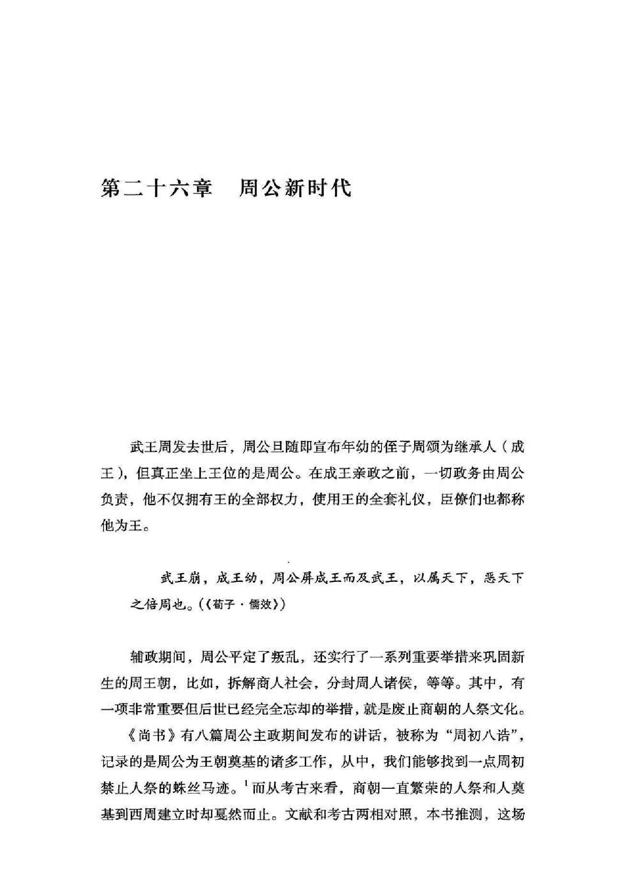
原书阅读器页 524原书物理 PDF 页 522印刷页 510
“三监”和关中有密切联系，他们的宣传鼓动传入了镐京。《尚书·金滕》载：“武王既丧，管叔及其群弟乃流言于国日‘公将不利于孺子。’” “公”即是周公，“孺子”即是成王周颂。
〔按语：孺子牛〕
而武王临终前谈话的内容可能也有所泄露，比如准备毁灭殷都和屠杀商人的计划等。管叔等人不能接受毁灭殷都的方案，这里繁华富庶，比西土的生活好得多，怎能轻易付之一炬？
至于商王武庚，最初他应该还没有起兵造反的勇气，但因处在管叔等“三监”的控制之下，也被裹挟进了叛乱，故《史记•管蔡世家》曰：“乃挟武庚以作乱。”此外，山东和苏北淮河流域的夷人部落，嬴姓的徐、奄等部族，也加入了反周公同盟。[[fn:2]]
纣王时期，商朝曾重点经营东南夷地区，所以这里的很多部落和商朝关系密切，比如纣王重用的蜚廉和恶来父子就属于嬴姓夷人，恶来虽在牧野之战中被杀，但蜚廉却逃回了家乡并带领族人起兵反周。周公辅政元年，整个东方都已脱离镐京的统治，叛乱者的声势越来越大。
关中的周人贵族大都不愿再次进行战争，认为叛乱者势力强大，且以“三监”为首，开战则意味着周族手足相残，所以最稳妥的方案是妥协，东西分陕而治，把东方殷商旧地全权交给“三监”。但周公和召公反对，坚持要平息叛乱。
周公辅政二年春季，为了让周人支持这场战争，他开始准备全面动员。
周公先是求助于先王之灵，并用文王留下的那只大龟壳占卜，然后发表讲话，刻意淡化周人内部的矛盾，强调这主要是商朝残余势力和周朝的较量。
宁王遗我大宝龟，绍天明，即命日：“有大艰于西土，西土人亦不静。越兹蠢殷小腆，诞敢纪其叙，天降威，知我国有疵，民不康，曰‘予复！’ 反鄙我周邦。今蠢（春）今翼日，民献有十夫予翼，以于敉宁武图功，我有大事，休？朕卜，并吉。”[[editor-fn:1]]
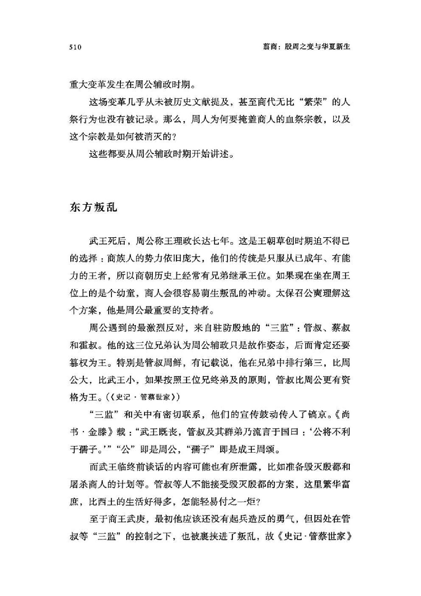
原书阅读器页 525原书物理 PDF 页 523印刷页 511
翻译为白话是，文王给我留下了大宝龟，在这个早上，我用它来占卜，先在上面刻上向文王汇报的命辞：“西土遇到了大困难，人心惶惶，那愚蠢的殷商，如今小有积蓄，胆敢试图恢复它的声势。上天给我周邦降下危难，带走了武王，那些商人知道我国有危机，人民不安定，就说：‘我们恢复王朝的时机来了！‘他们想让我周邦臣服。这个春天的翌祭日（占卜当日），我带领十名受到民众推戴的臣僚，准备完成文王和武王开启的功业，我这件大事业会顺利吗？"我的占卜结果是：一切都会吉利！[[fn:3]]
《尚书•大诰》是现存的周公辅政时期的第一篇讲话文稿，其主旨是必须消灭东方叛乱者。但与文王不同，周公没有亲自见到上帝的能力，所以只能在龟壳上释读上帝和文王的意旨：“我是文王的孩子，不敢违抗上帝的命令。上天福佑文王，让我们这个小小的周国兴盛起来。文王从来都信仰占卜结果，所以能接收上天的命令。现在，上天来帮助我们，也是通过占卜显示天意！”
予惟小子，不敢替上帝命。天休于宁王，兴我小邦周，宁王惟卜用，克绥受兹命。今天其相民，矧亦惟卜用！
《尚书》所载商周之际王的讲话，经常用浅显的农业生活例子作类比，讲道理。周公这篇也不例外。他说，文王开启的翦商事业，要靠我们这一代人完成，就像父亲盖房子，已经筑好了房基，但儿子不愿建造屋墙，这房子能完成吗？就像父亲开垦了荒地，儿子却不愿播种，这样能有收获吗？
〔编者注1〕大诰[dà gào] https://baike.baidu.com/item/%E5%A4%A7%E8%AF%B0/63312
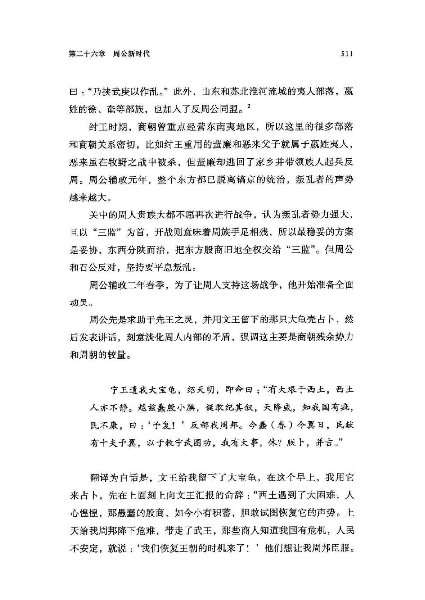
原书阅读器页 526原书物理 PDF 页 524印刷页 512
王曰：“若考作室，既厎法，厥子乃弗肯堂，矧肯构？厥父菑，厥子乃弗肯播，矧肯穫？”
〔按语：砥平里〕
〔按语：中流砥柱〕
周公带兵东征，首先指向殷都。史书没有记载战争过程，只提到殷都发生了大混乱和溃败，“三监”被俘虏，为首的管叔周鲜被处死，蔡叔、霍叔被褫夺封爵，终身囚禁；[[fn:4]]商王武庚则逃亡到北方，被追兵杀死。
对东南夷人的战争耗时更久，可能从周公辅政三年持续到四年。这里地域广阔，土著部落众多，周人势力还未能触及这里，所以由周公和召公奭分兵进剿。据《吕氏春秋》载，有些商人侯国使用驯化的大象作战，但仍被周军击溃，逃到了江南地区。为赞美周公的功德，周朝宫廷还专门创作和增加了《三象》舞乐。[[fn:5]]而蜚廉则在失败后逃到海边，仍被追杀，最后族人被周朝强制迁徙到西土，后来繁衍出秦族和秦国。[[fn:6]]
武王灭商，虽三月告成，但其实只是开端，因为商朝解体后，大量商人氏族还保留着武装，尤其东南夷人地区的商人势力更是毫发无损。周公这次东征，历时三年，才算是彻底消灭了商人的军事实力，把周朝的统治推进到原商朝的全部疆域。周人一度因战争而疲惫不堪，《诗经·破斧》这样歌唱：
既破我斧，又缺我斨。周公东征，四国是皇。[[editor-fn:2]]
这可能是后方周人忙于劳作的咏叹。
而从牧野之战算起，周王朝则经过大约五六年才算是真正建立起了稳定而全面的统治。也只有到此时，周公旦才可能对周朝予以通盘规划。其中，最重要的工作是处理商王朝的庞大遗留，先要彻底消除商人兴兵复辟的可能性，然后废止他们血腥的人祭宗教。
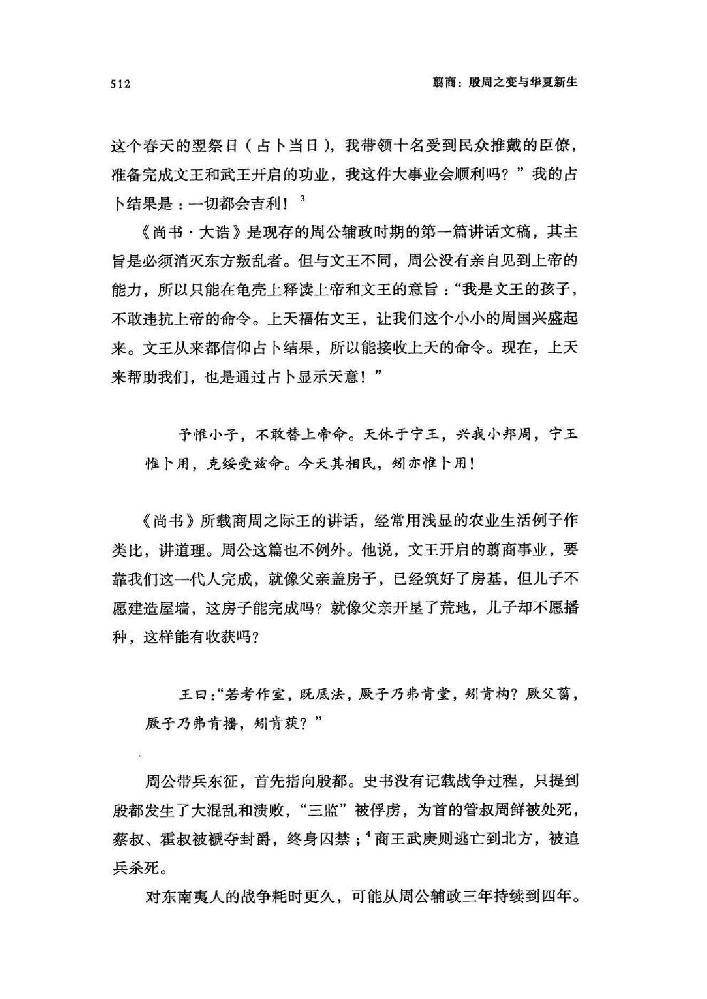
原书阅读器页 527原书物理 PDF 页 525印刷页 513
〔编者注2〕豳风·破斧 https://baike.baidu.com/item/%E8%B1%B3%E9%A3%8E%C2%B7%E7%A0%B4%E6%96%A7/4909189
为此，周公做了两方面的工作：一，拆分商人族群，消灭其军事实力和人祭宗教；二，分封各种诸侯国，统治、同化新征服的东方地区。
先来看第一项工作。
拆分商族
商王朝历时五百余年，商族已经枝繁叶茂，是规模最大的族群，而周当时还只能算是西土新兴的蕞尔小邦（蕞尔：小而弱的国家）。虽然无法确知当时的人口数字，但据估算，商族人口可能近百万；商朝控制区内的各种非商族人口，比如众多土著族邦和被纣王纳入统治的部分东南夷人，总数可能是商族人的两三倍；而在商朝的控制范围之外及认知范围之内，各种蛮夷土著的总数也会有近百万。
经过文王时代的急剧扩张，到武王时期，周族可能在十万人左右，即便加上西土各同盟族邦，也很难超过五十万人。况且多数盟邦当时与周的关系并不稳定，周王还难以对他们发号施令。
为了杜绝商族人再度叛乱的可能性，必须把他们拆分，使其散居到各地，难以互相联络。首要的，是要把最为显赫的商人贵族和最重要的家支族邑迁到关中，使其在周人的传统势力范围内散居，断绝其与故土的联系。
武王灭商后，这个工作已经做了一些。有些在纣王时期不得势的商人贵族已经主动投靠周朝，把家族搬迁到了关中，比如，周原曾发掘出一座名为“微史”的商人家族的青铜器窖藏，著名的“史墙盘”即出土于此，其铭文中讲述：武王刚灭商，微史氏的“烈祖”就主动带着家人搬到了关中，武王命令周公给他们安顿家宅，让其在周原定居下来。由于是主动投靠，微史氏颇受重用，世代担任周朝史官，主管文书和档案。
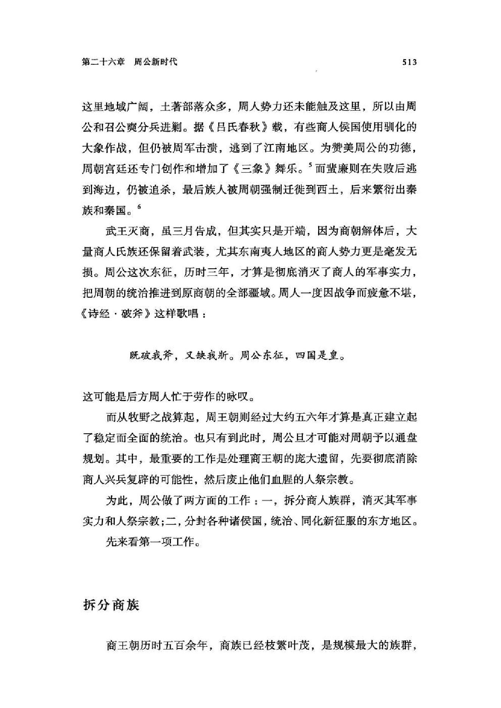
原书阅读器页 528原书物理 PDF 页 526印刷页 514
平定三监之乱后，周公对商族人的搬迁力度更大：从镐京到周原，再到周边的川源山谷，在整个关中地区安顿了很多商族聚落。因为他们使用的器物、丧葬习俗和关中土著族群很不一样，考古已发现很多这种殷商移民的遗址。
迁入关中后，这些商人族邑可以获得土地并垦殖，族长则有机会在周朝担任官职，特别是和书写、文化有关的职位，因为相比商人，周人文化程度较低，需要吸收商人的书面文化和行政管理经验。
当然，仅靠移民关中，尚不足以消解庞大的殷都人口，而周公的目标是要把殷都彻底抹去。商族的血祭文化和殷都联系太多，不仅众多的商王陵和族墓埋葬着无数殉葬人与人牲，还有无数的甲骨卜辞记载着商人的血腥文化以及让文王家族心碎的遭遇。所以，必须毁灭殷都，断绝商人的血祭文化传承和历史记忆，让他们开始新的、正常的、和平的生活。
史墙盘铭文拓片，《集成》10175（图）
其实，武王周发已经有了这个规划。他在病中和周公谈话、安排后事时，很重要的一项就是要毁灭殷都（“夷兹殷”），同时把周朝都城向东推进，在中土的洛河之滨营建一座新城。
武王一直活在对商人的恐惧和仇恨之中，但也同时活在对商人宗教理念的痴迷中。在他的计划里，可能是要把商人押解到新城规划之地屠杀祭天，让他们成为“度邑”的奠基礼。他相信，只要有了这份空前丰厚的祭品，上帝会格外垂青于周王室，给他们降下一条平坦的通天大道。如果武王周发的寿命足够长，他完全有可能成为像殷高宗武丁一样以杀戮献祭著称的“伟大”君王。[[fn:7]]
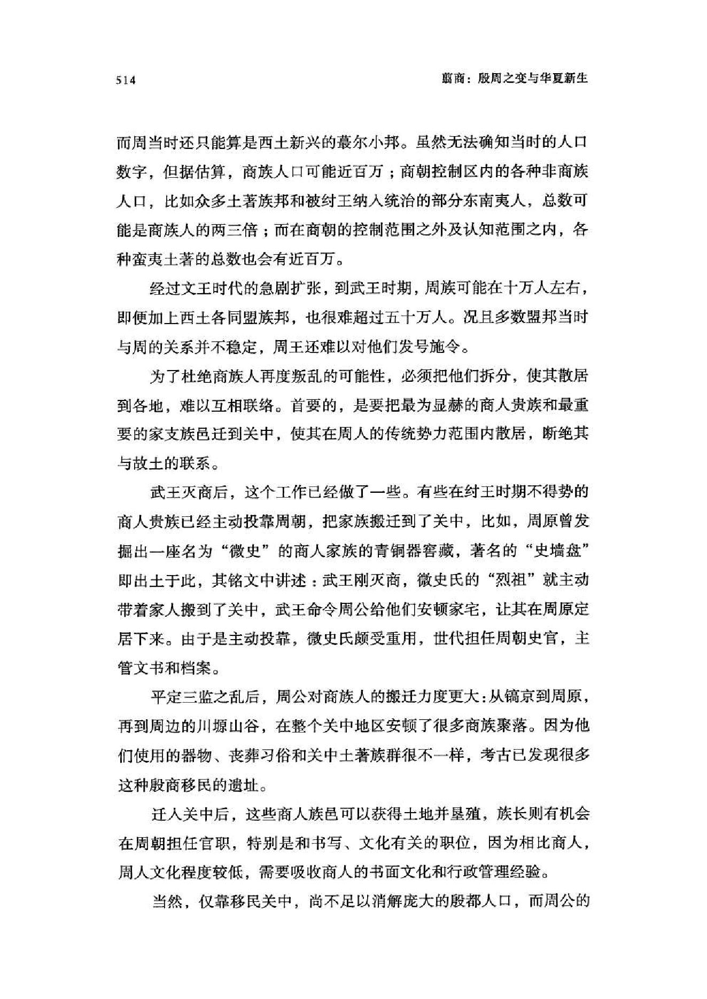
原书阅读器页 529原书物理 PDF 页 527印刷页 515
当然，周公并不赞同武王的计划，但他必须消灭商人再度叛乱的可能，并同时改造商人的宗教文化。
周公的另一面
辅政第七年，周公开始营建武王设想的新城，但名字换成了平庸的“洛邑”。“度邑”的宗教意义太强，周公不想接受。
这意味着有二百多年历史的殷都将被彻底摧毁，所有贵贱居民都将被强制迁往洛邑。此时殷都的居民已经大大减少，因为拆分殷商的工作已经实行三年，比如，已经有部分殷民跟随微子启到了南方的商丘，建立了宋国；周公新分封的几个诸侯国也掺入了一定比例的殷民；最后搬迁的，是对周朝最为抵制和最不恭顺的，被称为“殷顽民”。（《尚书•多士》）[[editor-fn:3]]
为让“殷顽民”接受现实，顺利搬迁，周公还专程赶来监督和督促，并发表了一篇讲话，是为《多士》；而二百多年前，为动员商人迁往殷都，商王盘庚也曾发表一篇讲话，这便是著名的《盘庚》。对照这两篇有关殷都诞生和毁灭的重要文献，我们可以看到周公和盘庚的某些类似之处。
和人们印象中那个彬彬有礼、拘谨保守的周公不同，《多士》展现了他朝三暮四、翻云覆雨的手腕和威逼利诱、软硬兼施的能力。周公很了解商人，知道和他们相处的方式，而这恰恰是后人不了解的商人，更是并不真正了解的周公。
周公还是以周王的身份讲话。他先是按照标准的官方历史叙事，回顾了周邦灭商的合法性：”是天-上帝对殷商失望，才命令我周邦灭掉了商朝。各位贵族，不是我小国周邦想主动灭亡你们，而是上天要把你们交给我，如果上帝不给，我们敢主动去要求吗？ ”
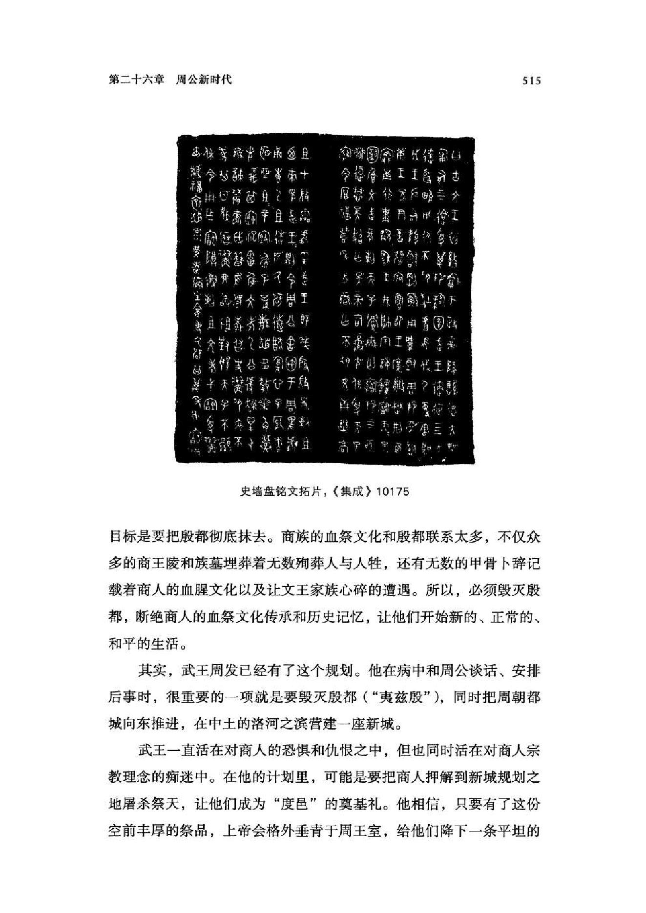
原书阅读器页 530原书物理 PDF 页 528印刷页 516
〔编者注3〕尚书•多士 https://baike.baidu.com/item/%E5%A4%9A%E5%A3%AB/16216312
王若日：尔殷遗多士弗吊，旻天大降丧于殷。我有周佑命，将天明威，致王罚，敕殷命终于帝。肆尔多士！非我小国敢弋殷命！惟天不畀，允罔固乱。弼我，我其敢求位？惟帝不畀。惟我下民秉为，惟天明畏。
接着，周公讲了一套商朝代夏、周朝代商的循环逻辑，说这都是末代之王丧失德行，引起上帝的反感，从而导致天命改移。
一番套话后，周公谈到了正题，“有命曰割殷”：“现在，我作为周王，收到了上帝的命令，要废掉你们的殷都。”
周公也对殷民表示了惋惜和不理解，他说：“我也觉得，上天这样对待殷人太过分和不近情理，但是，跟你们各位贵族实话实说，我现在必须带着你们西迁，这不是我自己不想安分，而是天命最新的要求，你们不要想违抗。我不敢耽误时间，你们也不要埋怨我！……难道是我敢向你们索要（和毁灭）天邑商吗？我只是可怜你们，这不是我的罪过，是天命的安排！”
王曰：猷，告尔多士。予惟时其迁居西尔。非我一人奉德不康宁。时惟天命。无违。朕不敢有後。无我怨！……肆予敢求尔于天邑商？予惟率肆矜尔！非予罪，时惟天命！
接着，周公暗露威胁：“当初，我从讨伐东夷的战场回来，曾经给你们列国之民发布命令，我会光明正大地替天进行惩罚！如今，让你们搬个距离不远的家，只是为了方便你们侍奉周朝，（比起杀人）算是轻微多了。”
王曰：多士！昔朕来自奄，予大降尔四国民命，我乃明致天罚！移尔遐逖，比事臣我宗，多逊。
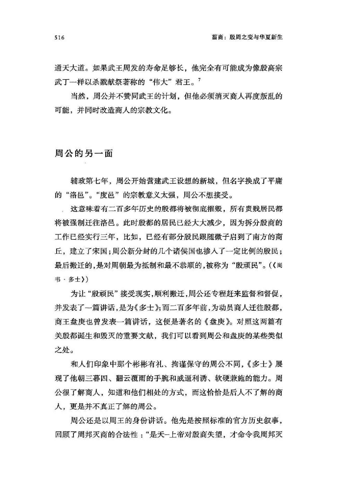
原书阅读器页 531原书物理 PDF 页 529印刷页 517
“告诉你们，现在，我肯定不会杀你们，我这话已经重复过好几遍了。如今，我要在那洛水边建一座大邑，我考虑天下四方还没有全部臣服，而你们诸位贵族呢，已经臣服于我周朝，替我奔走服务了，比起那些还负隅顽抗的，自然要好得多，所以（在新城洛邑）你们还会拥有土地，可以安心过日子。
“只要你们恭顺，上天也会垂怜你们；你们不肯恭顺呢，不只是不能拥有土地，我还会代表天惩罚你们。现在，赶快去建造你们的族邑家宅，继续过你们的生活，那新洛邑是个长久的安家之地，把你们的孩子们也都带上，一起搬迁！”
王日：告尔殷多士——今予惟不尔杀，予惟时命有申。今朕作大邑于兹洛，予惟四方罔攸宾，亦惟尔多士，攸服奔走臣我，多逊。尔乃尚有尔土，尔乃尚宁干止。
尔克敬，天惟畀矜尔。尔不克敬，尔不啻不有尔土，予亦致天之罚于尔躬！今尔惟时宅尔邑、继尔居。尔厥有干、有年于兹洛。尔小子乃兴，从尔迁！
周公这番讲话的目的是要敦促殷人必须全部、尽快地搬迁，不要有侥幸拖延的想法；同时，他还要安慰人心，告诉他们搬迁的计划不是集体屠杀的阴谋，所以他强调，四方没有宾服的方国势力还有很多，没有必要现在就动手杀他们。
周公对上帝的观念也很值得讨论。和兄长武王谈话时，周公频频谈到上帝，因为武王无法摆脱对上帝的信仰却又对上帝是否保佑自己缺乏信心。但武王死后，周公和周人的谈话中就较少出现上帝了，必要时多用含糊的“天”来代指上帝。
在周公看来，源于殷商的上帝概念颇有危险性，商文化里的上帝不仅残暴，而且难以捉摸。虽然文王曾试图重新定义上帝，但后继无人，结果武王被上帝概念搞得神魂颠倒。要把上帝和商人文化彻底切割是很困难的，所以周公认为，应当淡化上帝，尽量少让它出现。
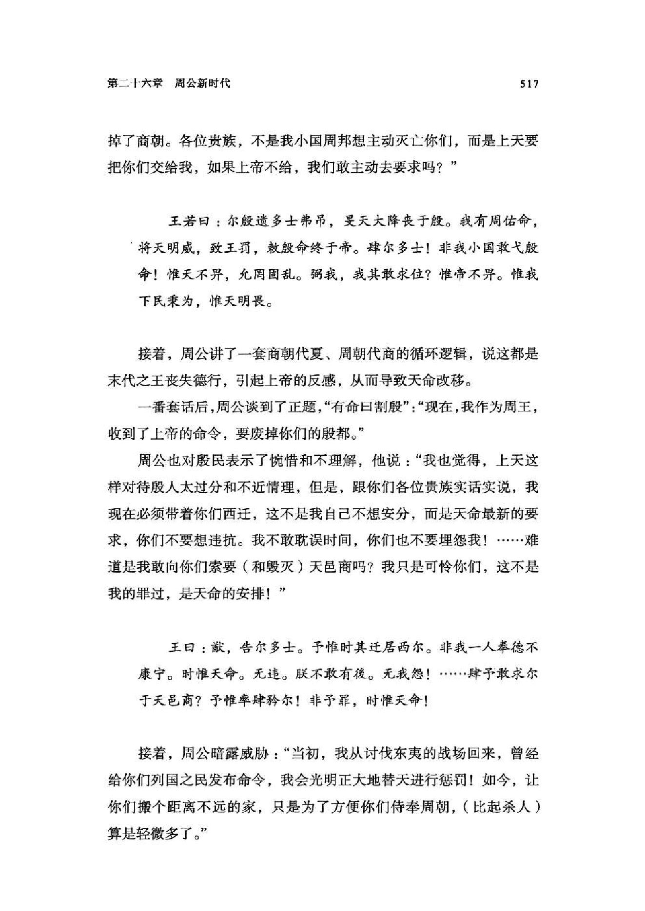
原书阅读器页 532原书物理 PDF 页 530印刷页 518
和周人谈话时，周公讲得最多的是“德”。他在后世的形象是道德家，谦谦君子，甚至显得迂腐不通世故，应该主要就是从这里来的。但在对商人布置任务时，周公却又会频频谈及上帝，因为商人笃信上帝，不用上帝很难震慑他们。有时，周公还会使用露骨的暴力威胁和利益诱惑，这也是因为商人容易理解和接受这些，相反，跟他们讲道德，则过于玄远，无异于对牛弹琴。当然，这是有紧急任务，换作平时，对商人宣讲一下道德也无妨。
所以，真实的周公，个性颇为复杂。其一，他经历过商朝统治和商周易代，深刻了解商人的文化和个性，能在殷都存活下来，自然有世俗的生存智慧。其二，过于惨痛的经历也让他对上帝等宗教理念非常警觉，敬而远之，而对“德”则有着近乎“病态”的追求。
“殷顽民”搬迁后，周人系统而全面地毁灭了殷都，大火之后，富丽堂皇的商王宫殿只剩下了灰烬和坍塌的成堆夯土，而方圆数公里内，数十个族邑聚落无一幸存。在随后的几百年里，这片土地沦为荒野，曾经巨大的城邑永远从人间消失，只剩深埋在地下的墓葬和无数的甲骨卜辞，以及那些献祭殉人和奠基人牲。
而执行毁灭殷都任务的周人似乎越来越疯狂。在殷商高级墓葬的墓穴上方，商人通常会建造一座供子孙祭祀逝者的享堂，所以，周人只要按图索骥，并不难找到。由此，他们挖掘了商王陵区的几乎所有高级墓葬，连同十几代商王及其夫人的墓穴均遭到毁灭性破坏：被挖成锅底形状的巨大土坑，直径十几米，深十余米，椁室中的尸体和随葬品被洗劫一空。这种规模的破坏行为，绝对超出了盗墓贼的能力和作案条件，它只能是公开的、有组织的集体行为。
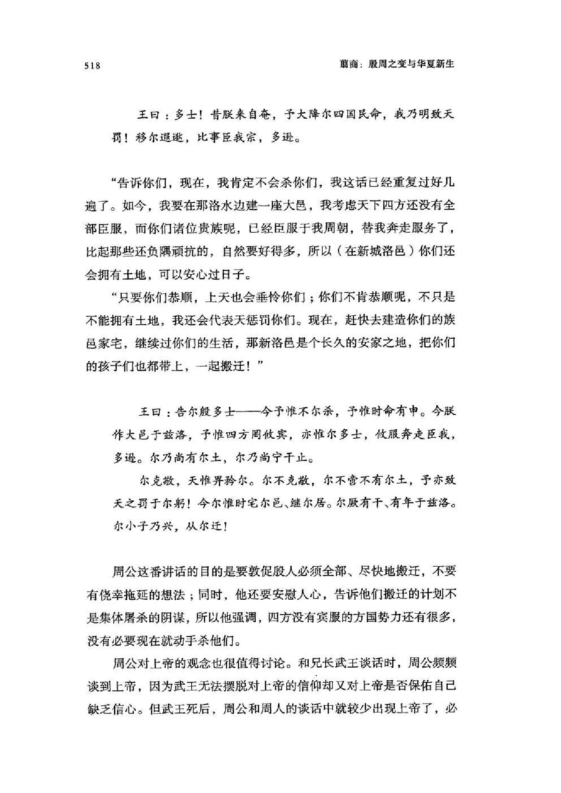
原书阅读器页 533原书物理 PDF 页 531印刷页 519
M1001墓穴上面的大型破坏坑平面图[[fn:8]]：殷墟王陵区所有的大墓，商王、王后、高级贵族的，都遭到了这种毁灭性破坏（图）
劫掠和破坏完墓穴之后，这些巨大的盗坑又被周人填埋，重新变成平地。可见，在将其彻底破坏之后，周人还有意识地要把这里变成被彻底遗忘之地。
直到三千余年后，第一代考古人在重新发掘这些墓室时才发现，除了巨大的盗坑之外，遗留的物品已经很少。但幸运的是，他们还是在一座大坑的填土之中发现了半只被砸断的石刻人偶，而后又在另一座坑的填土中发现了另一半。这说明，盗坑的挖掘和填埋是同步进行的。
由此，破坏王陵的行动即使不是周公布置的，至少也得到了他的默许。商王朝虽然已经成了历史，但周人对商朝和历代商王依然又恨又怕，谁又真的知道他们会不会在天庭中降祸人间，而掘其墓、扬其尸则可能会切断他们干预人间的途径，况且在商朝的统治下，周人经历了数十年的恐怖，也背负了巨大的良心之债，捣毁商王陵寝或许能让他们稍微缓解一些。周公这一代人承受的负担，沉重到无法载入文字。
至于那些被毁灭的商王陵寝中还可能有些什么奇异的青铜重器，已经难以想象，但有些劫余依然可以给我们提供一些参照。比如，某些次等墓葬中曾出土零星的劫余物品，其中就有近一吨重的“商后母戊鼎”，由此推理，王陵中应该有更加巨大且精致的青铜器。但在后来，无论西周、春秋，还是更晚时代的遗存，都没有发现如“商后母戊鼎”级别的商代重器，也没人描述过它们。我们已经无法知晓它们去了哪里，或许周人出于忌讳和厌恶，把这些掘出的青铜随葬品熔化成了铜锭或者铸造成了其他铜器。
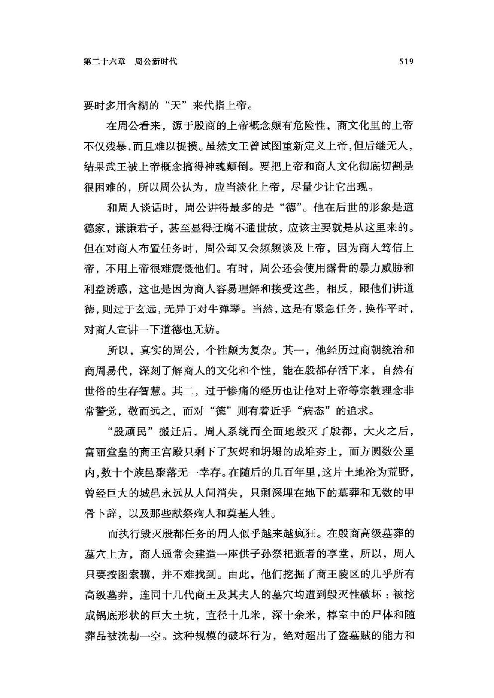
原书阅读器页 534原书物理 PDF 页 532印刷页 520
〔按语：司母戊〕
残忍部族的终结
在通往殷墟王宫的大路边，是擅长制陶的刘家庄北商人族邑。如前所述，这里曾挖掘出铜甗里装有蒸熟人头的M1046墓葬，有大路边堆满人畜骨骸的祭祀场。但殷商解体之后，刘家庄北聚落呈现的是一片仓皇景象。
其中的F79是一座贵族住宅，整体呈回字形四合院状，坐北朝南。整座住宅已被烧毁，散落堆积着坍塌的烧土块。在东小院内（院落中部偏北），有一深2米的袋状窖穴H2498，本来是储存粟米的粮窖，但坑底散乱放置了三件刻有铭文的铜礼器，分别是尊二件和斝一件，此外，还有陶罍一件。这几件器物的表面都沾着黑灰土，被红色烧土块掩埋在坑内。
F79发掘照片（图）
同期，在西大路西侧的F22旁边，也有一座铜器窖藏坑H326，虽然只有30厘米深，里面却放置了三件铜器，鼎、斝、卣各一件,
有的颠倒，有的正放。坑内还有些空间，可能放置了其他财物，但已经腐朽无存。[[fn:9]]
H326平面及剖面图：1. 铜提梁卣；2. 铜鼎；3. 铜分裆斝[[fn:10]]（图）
H2498窖穴（俯拍）（图）
上述两座窖藏坑，器物摆放仓促，不像是正规祭祀行为。发掘简报猜测，考虑到上述窖藏坑年代均属殷墟文化四期偏晚阶段，“如此多的青铜重器在相对集中的时间段内被打碎、弃置或埋藏，加之此时的大型建筑被焚毁，这些事件绝非孤立发生，可能与周人灭殷的重大历史事件有关”。[[fn:11]]
此外，2015年，地产开发商在保护区范围擅自施工，竟挖出了部分金属埋藏物，经考古队抢救性发掘，发现这是一座掩埋大量铅锭的窖藏坑，编号H25。[[fn:12]]
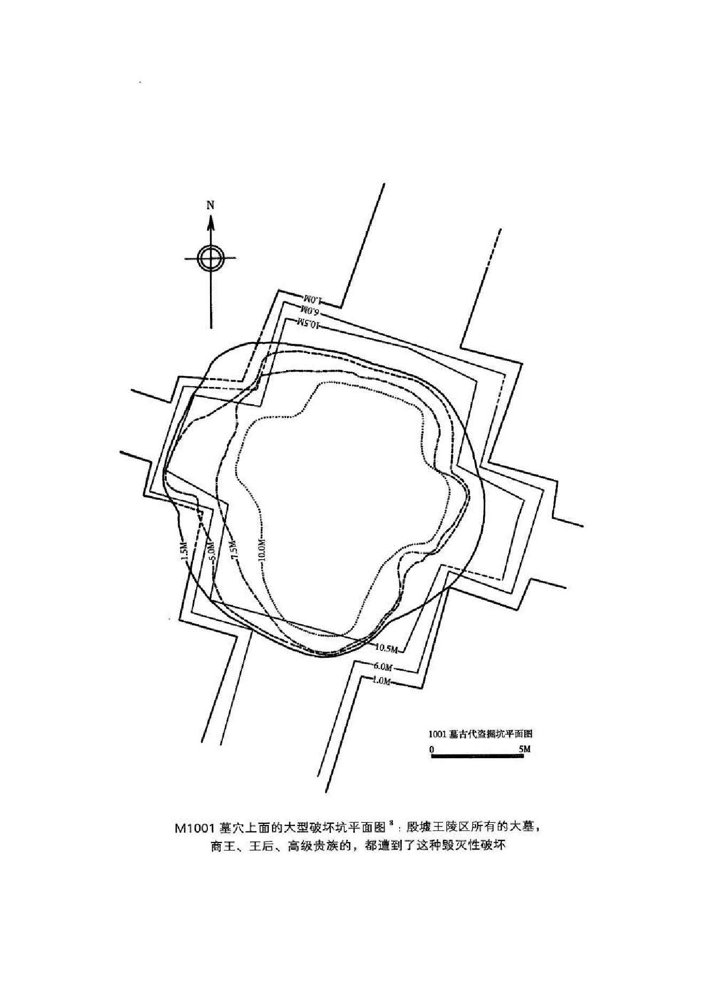
原书阅读器页 535原书物理 PDF 页 533印刷页 521
该坑直径约1.7米，深1米，铅锭在坑底堆积厚度有0.5米。铅锭都是薄片状，“略呈龟背形”，长度10—70厘米，单片重量5-40公斤。多数铅锭上都有一个圆孔，可能是为了方便穿绳搬运。坑底先垫了一层草编席子，然后逐层规范放置铅锭，共有293块，总重量达3404公斤。
H25内铅锭堆放情况（图）
这座铅锭坑紧邻着一座小房子F1，旁边还有其他院落附属建筑。铅锭可能本来储存在F1之内，最后是主人挖坑把它们掩埋了起来。从填土中的陶片判断，这座坑属于殷墟晚期。”考虑到铅是铸造青铜的必需品，刘家庄北聚落虽然不铸铜，但它东边却紧邻殷墟地区最大的铸铜产业区（苗圃北地），所以刘家庄北的贵族可能会从事铅等矿产品贸易。本书猜测，应该是殷都迁徙的消息传来时，主人急忙掩埋了这批铅锭。[[fn:13]]
当然，在周公组织的殷都搬迁中，像刘家庄北这种被暴力毁灭的聚落不算多。其他聚落很少有发现仓皇掩埋财物的现象，几乎所有贵族都带走了私家财物。新城洛邑出现的殷移民聚落和铸铜作坊等也显示多数搬迁是和平的。
刘家庄北之所以如此，或许是因为此地的商人格外地残忍和热衷人祭，对搬迁命令也最为抵触（甚至还和周军有过小规模冲突），自感未来并不会受到太好的对待，便纷纷掩埋了自家财物。
洛邑新城的道德演说
营建洛邑的工作由召公奭负责，在这之前，他住在关中主持留守朝廷。此时，成王可能有十三四岁，已接近亲政的年龄。
三月初，召公赶到洛邑，和周公押解来的殷都移民会合。此时的洛邑并非一块荒野，因为“三监之乱”平定后，周公在这里部署了一些监控东方的驻防兵力，所以又名“洛师”。（《尚书•洛诰》）
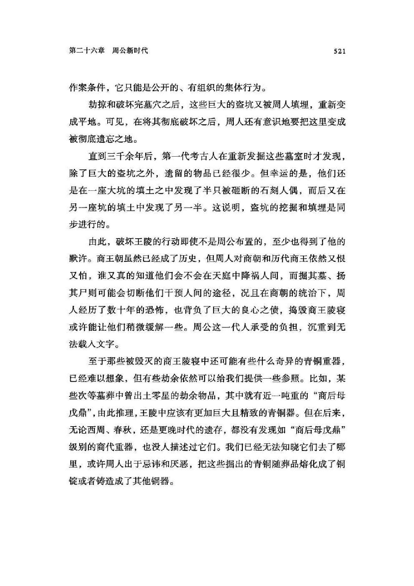
原书阅读器页 536原书物理 PDF 页 534印刷页 522
召公和周公的这次相会颇为重要。此时周公辅政称王已有七年，平定“三监之乱”也已经过去三年。这段时间里，他主要在东方，很少和成王在一起。对于周公是否愿意归还大政，外界颇有疑心。但周、召二人见面后，周公同意在该年从王位退下，交出权力。按照约定，待洛邑工程完成，成王将在这里举行登基仪式，正式建都洛邑。
其实，此时周公真正关心的问题是商人的人祭文化。商王朝虽然终结了，但他们用人牲祭祀、奠基和殉葬的传统并没有终止；而且武王在位期间还曾举行商式献祭，甚至比商人更变本加厉。人祭是一种漫长而顽固的风习，从新石器时代晚期以来算起，已经延续两三千年，商朝更是将其吸收到了王朝制度之中。想要根除上千年的积习，谈何容易。
这次周公与召公的谈话，有些被收入了《尚书•君奭》，其中周公说得最多的是王朝兴亡更替的教训。他认为，这背后虽都有天-上帝意志的改变，但唯一能影响天命的因素，是人的“德”，也就是人处理现实问题的准则。所以，周公说，“天不可信"，人不能奢望去揣摩天帝的意旨，只需要把世间的义务履行好。[[fn:14]]
在后世人看来，这属于老生常谈，但周公没有说出来，或者说了但不能记录下来的，应当是：不能指望靠祭祀讨好天帝和诸神，不仅周人不能这么做，也要禁绝商人的人祭行为。
当初武王灭商、进入殷都时，曾在纣王的尸首上表演射箭和斩首仪式，这是翦商大业的一幕经典场景，也是武王采用商人巫术和人祭礼仪的开端。据屈原《天问》，当时在武王身旁的周公旦曾表示不满，觉得武王将要重蹈殷商覆辙，周族未来的命运令人叹息：
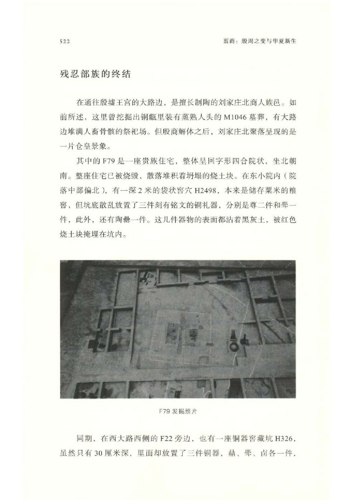
原书阅读器页 537原书物理 PDF 页 535印刷页 523
到击纣躬，叔旦不嘉。何亲揆发，周之命以咨嗟？授殷天下，其位安施？反成乃亡，其罪伊何？
如今武王已逝，周公和召公成为新王朝的掌舵人，他们要扭转武王标定的航向。二人这次密谈达成的共识，很快就在洛阳的建城典礼上体现了出来：首日，祭祀天帝（郊），用了两头牛；次日，祭祀土地之神（社），用了牛、羊和猪各一头。这和商人及周武王的献祭作风完全不同。洛邑新城是殷商移民最集中的地区，在这里举行典礼，相当于周朝上层给他们现身说法：血腥的人祭宗教应该终结了。[[fn:15]]
历时七天的祭祀完成后，营建工程开始，所有殷商移民也都投入了劳作之中：“厥既命殷庶，庶殷丕作。”（《尚书•召诰》）这些殷人还保留着原有的宗族组织，召公只需做好规划，给殷人各氏族的首领（尹）发布任务就行，其余工作会由殷人自行组织完成。
周公描述的洛邑城名为“新大邑”：“周公初基，作新大邑于东国洛（《尚书•康诰》）这正和商人称殷都为“大邑商”相对，象征着它是殷都居民的新家园。“新大邑”分布在瀍水的东西两侧，两地相距数公里：东侧主要是殷商移民居住区，西侧是周王行宫、宗庙以及周人居住区。在瀍水西岸（今洛阳火车东站附近）有一片周人贵族聚居区，王朝显贵大都在这里建造宅邸。墓区出土铜器中有“太保”铭文，说明召公奭家族的部分墓地也在这里。但因为洛邑城被覆压在现代洛阳城之下，目前发掘范围还很有限，尚未发现大规模的宫殿台基。也可能是洛邑的规划以实用为主，没有太多奢华的工程，也没有城墙。
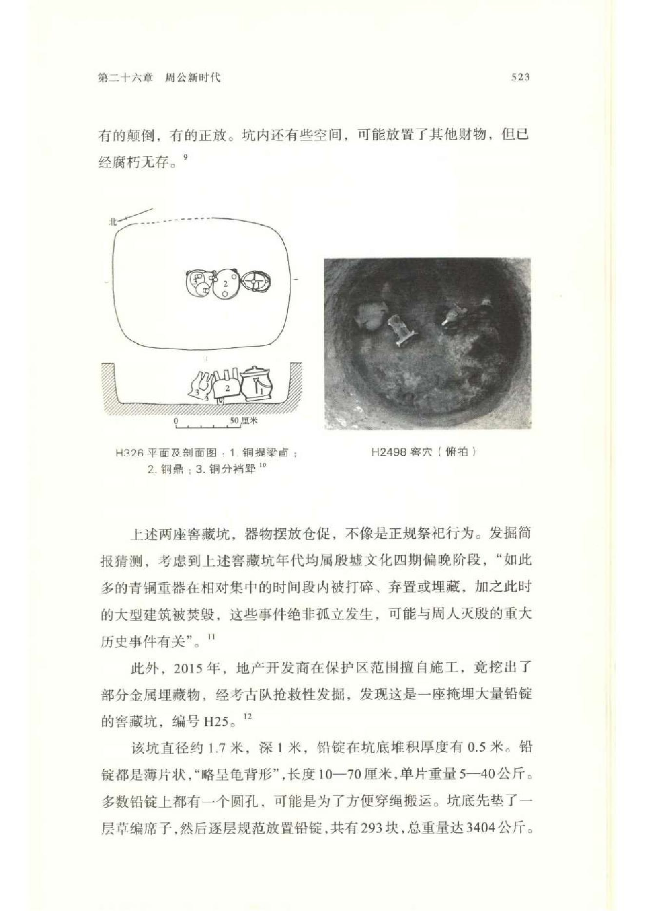
原书阅读器页 538原书物理 PDF 页 536印刷页 524
到下半年，新洛邑基本完成，官方名称为“成周”。有人说，这名字可能寓意周朝的成就，也可能和成王的尊号有关。与之相对，镐京（丰镐）被称为“宗周”，因为资历更老一些。岐下的周原则单称为“周”，是最古老和狭义的周地。
周公先是赶赴镐京向成王报告，并随成王来到成周洛邑。在这座据说距离上帝最近的城市，成王“加元服”（成人礼），从此开始履行王的职责：接见在洛邑的商人长老和周朝百官，在各种典礼上频频露面。周人希望让殷商移民看到新王振作有为的气象，所谓：“有王虽小，元子哉！”
此后，周公和召公对少年成王又有几番关于王朝兴衰的说教。和以往不太一样的是，二人的论说里新增了一个“小民”概念，指的是构成王朝主体的普通农夫和贵族封邑里的农奴。按照周公和召公新发展的理论，王应当关注小民的生活，听取他们的意见，不要（让贵族）虐待和过度剥夺他们，小民才是王永远获得天命眷顾的基础，所谓：“欲王以小民受天永命。”
其惟王勿以小民淫用非彝，亦敢殄戮用乂民。若有功，其惟王位在德元，小民乃惟刑用于天下。越王显，上下勤恤，其日：我受天命，丕若有夏历年，式勿替有殷历年。欲王以小民受天永命。（《尚书•召诰》）
到年底，成王在洛邑举行迎接新年的祭祀，奉献给文王和武王各一头红色的牛（骍牛）。[[fn:16]]看来，周公的新祭祀原则已经成为王朝正式制度。
但不知为何，成王并没有把洛邑作为真正的首都，不久之后，他又返回了镐京。和父辈不一样，成王并没有和商人共同生活的经历，但洛邑的主体居民是商人，这可能会让成王难以适应。结果，武王和周公谋划的迁都事业并未变成现实。此后，洛邑（洛阳）一直是西周王朝管理东方的军政中心，其主体是殷商移民，可以组建规模很大的军队。西周王朝前期，在洛阳可以调动的兵力是“殷八师”，也叫“成周八师”，每个师兵力数千人；与此相对，在宗周镐京，周人为主的兵力是“西六师”。
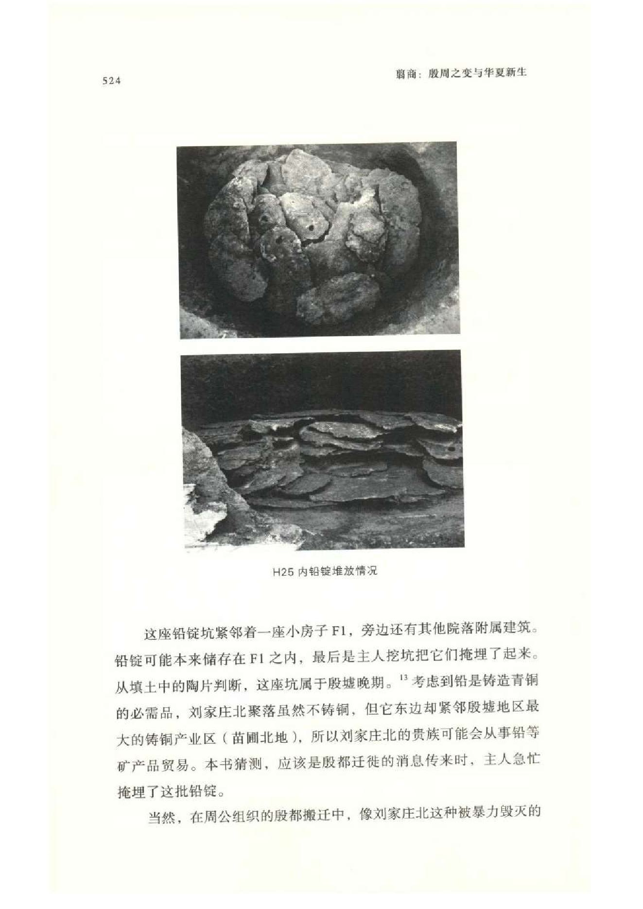
原书阅读器页 539原书物理 PDF 页 537印刷页 525
而商人也最终接受了商王朝的终结，在此后的几百年里再未试图复辟。但是，人祭的积习仍难以根除，周公和成王还有很多工作要做。
修改历史记忆
周公辅政时期留下的讲话文稿（诰命），几乎都是把商周王朝的更迭归因于统治者的个人德行，完全没有提及商人的人祭宗教，以及其崇尚武力和凶暴的文化品格，似乎商人和周人从来没有任何区别。
在《尚书•无逸》中，周公还把君王的在位时间和他们的德行联系起来，认为越是有德的君王，其享国时间越久，比如，商朝的高宗（武丁王）在位长达五十九年，周文王在位长达五十年（包括受命称王之前担任周邦族长的时间）。作为商末成长起来的一代人，周公不可能不知道商人的血祭文化，但他却从未提及，好像它们根本不曾存在。
其实，这背后隐藏着另一个问题：商人的血祭宗教是被周公终结的，但周公所做的远不止于此，他还要抹杀关于它的记忆，防止它死灰复燃。[[fn:17]]
而忘却是比禁止更根本的解决方式。为此，首先必须毁灭殷都，拆分商人族群，销毁商王的甲骨记录；其次，自古公亶父以来，周人曾经为商朝捕猎羌俘，这段不光彩的历史也应当被永久埋葬；再次，长兄伯邑考在殷都死于献祭，他的父亲和弟弟们还参与并分享了肉食，这段惨痛的经历也必须被遗忘。
目前殷墟发现的甲骨卜辞大多是武丁王时期的，属于末代的帝乙和纣王的数量极少，而且没有发现任何关于“周”的内容。然而，从常识推测，自古公亶父以来，周邦和商朝有很多交往，尤其是在周灭商之前的几年，纣王按理会占卜对付周邦的策略。
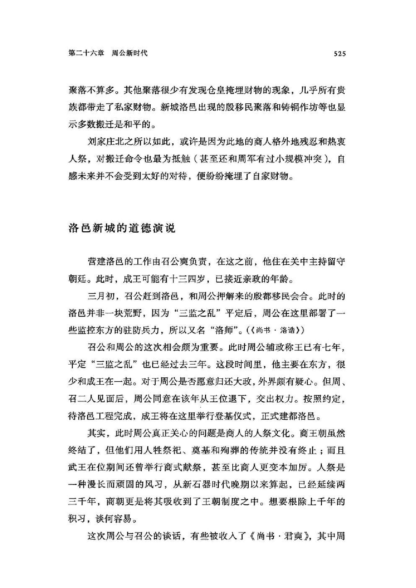
原书阅读器页 540原书物理 PDF 页 538印刷页 526
所以本书猜测，周公很可能曾派人检查过商朝的甲骨档案，并销毁了和周有关的一切内容，包括档案库在内的宫殿区也被焚毁和掩埋，即使三千年后有些甲骨被零星发现，也根本找不到涉及周的任何内容。
不仅如此，以周公为首的周朝上层还要重构新版本的历史：夏人、商人和周人没有什么区别，从来不存在人祭行为，王朝的更替只是因为末代君王的德行缺陷。在周公的诰命里，他一遍遍地重复这套新版的历史解释，终于成为西周官方定论。
或者也可以这么说，在周公辅政时期，周人中已经形成某种明确的“政治正确”：不能批评商人的宗教文化，更不能记录商人曾经的血祭行为。在文王和武王期间，周人应该还没有这种忌讳，不然，文王不会在《诗经•荡》中极度愤怒地控诉殷商王朝的残暴和堕落；而另一方面，这首诗应该也经过了周公一代人的改造，去掉了关于血祭的那些最为敏感的内容。
西周建立后，被周朝强制迁徙到各地的商人聚落很多，但它们已经很少发生用人献祭或奠基的行为，至少难以在考古中发现。比较特殊的是洛阳，这里是“殷顽民”（最顽固的殷商文化传承者）最集中的地方。
1974年，洛阳市北窑村发掘出一座西周前期的铸铜作坊，规模很大，陶质铸范碎块多达数万块，发掘报告指出，“早期居住遗存和第一期墓葬，出土陶器同殷墟小屯南地晚期陶器异常接近，时代应该接近殷末，即相当于西周初年”，而且铸范亦显示青铜器造型和纹饰沿袭了殷墟末期风格，显然是从殷都迁徙而来，甚至就是之前殷都王宫区以南苗圃北地的大型铸铜作坊。[[fn:18]]
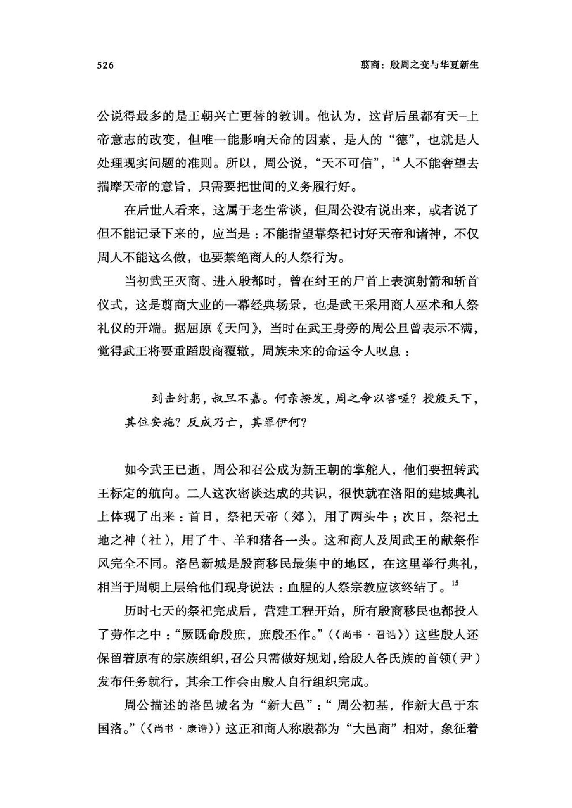
原书阅读器页 541原书物理 PDF 页 539印刷页 527
这座铸铜作坊不仅有来自殷都的铸铜技术，还有商人特色的人祭行为。比如，编号为F2的就是一座铸造厂房（东西长11.2米，南北宽7.2米），在它的夯土基址周边，有12座奠基坑呈环状分布，坑内共发现人骨架七具、马骨架三具以及狗骨架两具；朝东、朝南的两座房门外也各发现一座祭祀坑，内埋一人和一狗，“奠基所埋的人、兽有活埋时挣扎之状”。但发掘报告过于简略，没有祭祀坑的详细介绍和平面图，难以复原当时的细节。
铸铜作坊紧挨着墓葬区，其中规模最大的是M14，有很长且有直角弯的墓道，其他小墓则分布在它的周围。发掘报告推测，M14墓主应当是这座作坊的拥有者，但墓穴早已被盗掘一空，连尸骨遗存都没有，所以无法判断殉葬人的情况。墓道两侧有祭祀坑，分别是两座马坑、一座羊坑和一座人坑：马坑内各埋有被肢解的马两匹，羊坑内埋有四只羊，人祭坑内埋有一人。和殷墟相比，祭祀用人已经少得多了。
1975—1979年，洛阳市文物工作队扩大了对铸铜作坊遗址的发掘范围，发现了更多的人祭坑和近30具非正常死亡的尸骨。比如，大型灰坑H249发现人骨架六具，彼此相隔1—2米，呈基本平行的两排，有的无头颅，有的头被砍下来放在身体一侧，有的两臂曲在胸前且腿弯曲，“似捆绑状”，有半数的人，或胳膊或腿残缺。
此外，和这些人祭坑一起被发现的，还有一些完整的马、羊、狗骨架，以及占卜用过的甲骨。发掘报告推测，“每逢开炉浇铸之前很可能存在有占卜和人祭、牲祭之类的宗教祭祀活动"。这座铸铜作坊从西周初年开始生产，持续存在半个多世纪，直到大约周穆王时期才被废弃。[[fn:19]]
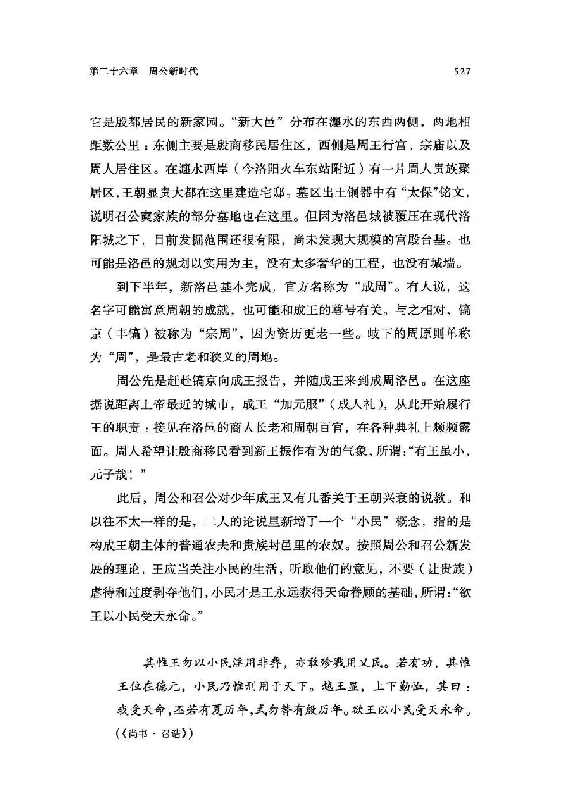
原书阅读器页 542原书物理 PDF 页 540印刷页 528
铸造作坊以北200米处，是周人高级贵族公墓区。这些周人贵族墓虽然规格高，墓穴大，随葬品多，但都没有殉葬人，更没有用人献祭。此外，这些周人墓葬都是头朝北方，而铸铜作坊的墓葬都是头朝南方，看来，殷人和周人移民都还各自保留着自己的文化习俗，即使比邻而居，也泾渭分明。[[fn:20]]
另一处祭祀场在今河南科技大学的林业职业学院内，有两座残留灰烬的燎祭坑和37座埋牲祭坑，多数坑内有完整的马或牛或猪骨架，还有人和马、猪、牛、狗一起埋葬的。报告没有提供人祭数量，从照片看，可能每座坑内不超过一人。[[fn:21]]目前尚未公布更详细的发掘报告，从人和牲畜混合祭祀的做法来看，与殷墟刘家庄北制陶聚落相似，但肢解分尸的现象已经比刘家庄北少。
这些“殷顽民”的人祭行为难免会引起成王和周公的注意，根据周公的“政治正确”原则，这些事情很难被文献记录。为此，周公叔侄需要发明一套新语汇。
这是年轻的成王首次需要面对的困难。
成王的愤怒
刚刚亲政的成王比较急于走出叔父周公的影响，建立自己的功业。恰好，山东地区的东夷土著又发生叛乱，核心是“三监之乱”时期曾活跃的奄国。当地有两个周朝刚分封的诸侯国，分别是周公长子的鲁国和太公吕尚长子的齐国，朝廷需要为这两个立足未稳的诸侯提供保护。
于是，年轻的成王便带兵亲征东夷，陪伴在他身边的是母亲邑姜，而周公可能坐镇镐京后方。有些周臣僚制作的青铜器铭文记载了太后在东夷战争中的活动。在周公辅政和儿子隐居成长的七年里，邑姜一直静默无闻，但现在，她不仅在意儿子的安全，也牵挂创建齐国的兄弟（此时吕尚可能已经离世）。
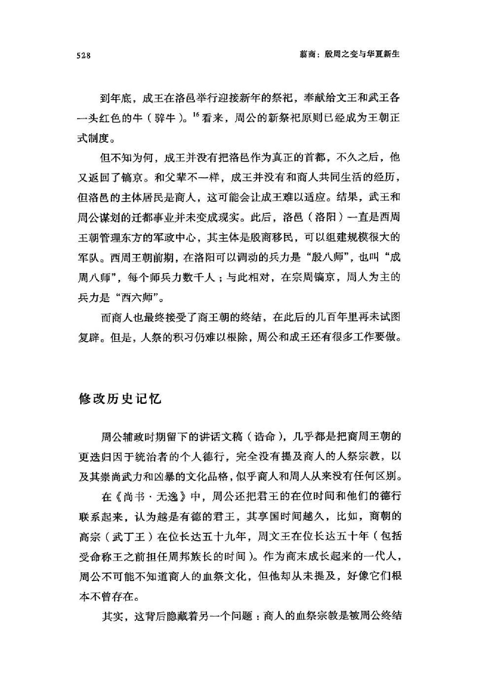
原书阅读器页 543原书物理 PDF 页 541印刷页 529
成王亲政第五年，第二次东夷战争结束后，成王和母后东返，途中经过成周洛阳小住了一段时间。在这期间，有一位贵族曾获得成王的接见，之后更是专门制作了一件青铜尊，这就是因“宅兹中国”的铭文而著称于后世的“何尊”。这也是目前发现的“中国”一词的最早记录，它在当时的意思是“中原之地”。[[fn:22]]
何尊及其铭文拓片（图）
返回成周镐京后，成王立刻和周公召集会议，对殷周贵族们发布了一个讲话，这便是《尚书•多方》。即使周公叔侄刻意控制了情绪，其中包含的对殷商遗民极为深切的反感和厌恶也还是弥漫在文字之间。显然，成王此行可能看到了一些让他和周公深为愤怒的现象。
在开篇，周公先向臣僚们转达了成王的话：“向你们四方列国正式宣告，特别是殷人的君侯、长老和民众，我很严肃地向你们下达王命，你们不是不知道那改朝换代的伟大天命，也不是忘了恭敬祭祀……”
到底是殷人的什么行为触怒了成王叔侄，他们却吞吞吐吐地说不出来，只是诉诸“周公式”的历史说教，说夏朝和商朝的灭亡都是因为残酷地虐待人民，滥用各种刑罚，诸如“不肯戚言于民，乃大淫昏” “日钦劓割夏邑” “乃胥惟虐于民” “殄戮多罪”等，故而丧失了天命。而且，周公这次指责的不是夏桀和商纣这两位末代昏君，而是整个“多士” （贵族阶层）。比如，他批评夏朝的贵族们只会虐待人民，有各种不人道行径：
惟夏之恭多士，大不克明保享于民，乃胥惟虐于民，至于百为，大不克开。
后面成王的发言，怨气更大，但也更不知所云。按他的说法，“殷多士”，也就是殷商贵族们，虽然已经投降周朝且奔走效力五年，但在自己的家庭和族邑里仍然“不和”“不睦”，用“凶德”统治，“尔心未爱”（缺乏爱心），不敬重天命，胡作非为。
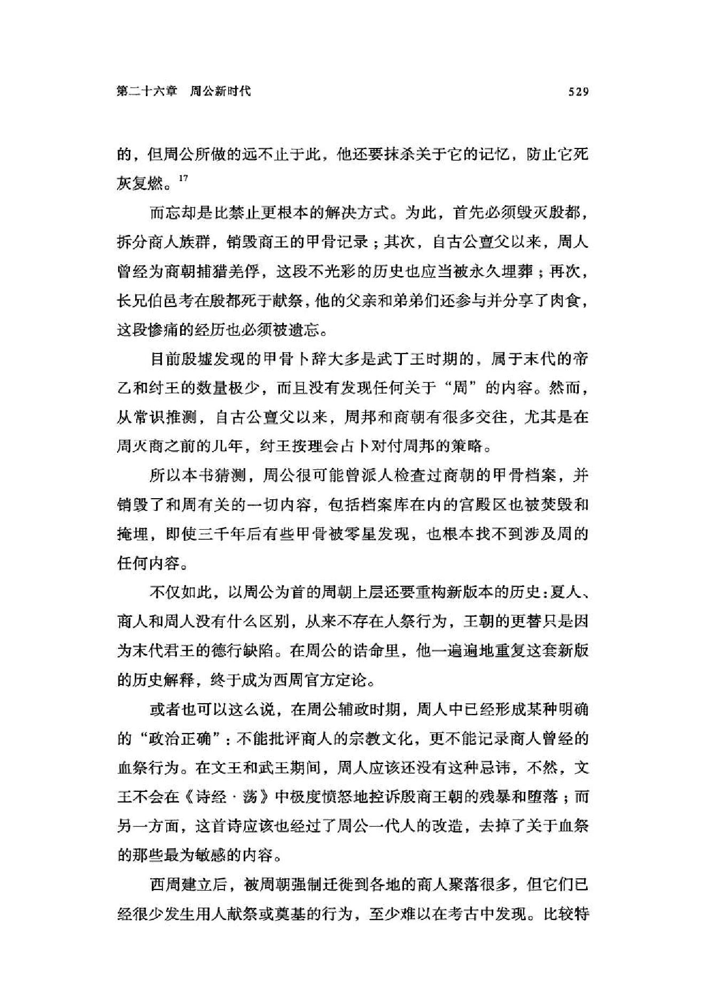
原书阅读器页 544原书物理 PDF 页 542印刷页 530
然后，成王对他们发出凶狠的威胁：“我现在警告你们，再有下次我就要动武，把你们抓起来，用大刑处死！一次不起作用，还会有第二次、第三次！不是我们周朝不慈善，是你们自己招来的报应！”
今尔尚宅尔宅、畋尔田，尔曷不惠王熙天之命？尔乃迪屡不静，尔心未爱。尔乃不大宅天命，尔乃屑播天命。尔乃自作不典，
图忱于正。我惟时其教告之，我惟时其战要囚之，至于再，至于三！乃有不用我降尔命，我乃其大罚殛之！非我有周秉德不康宁，乃惟尔自速辜！
那么，成王叔侄到底是对什么行为如此愤怒？本书认为，应当是商人群体还残留的人祭、人殉和人奠基等遗风。考虑到成王归途中曾在洛阳停留，应该是当地殷商移民的人祭行为让他感到无比震惊。
在真正的现场发言中，叔侄二人也许会对“殷多士”直言必须禁止人祭行为，但在整理笔录文献的时候，人祭却被替换成了“惟虐”“殄戮”等相对含糊的字眼，似乎殷商贵族们只是喜欢滥施刑罚而已。从现实意义看，这种替换的区别并不大，因为商人对人牲、罪犯、俘虏和奴隶这些概念的区分本身就很模糊。在官方文本的记载中，成王叔侄看似绕开了商人宗教的话题，但严禁商人以包括宗教在内的名义随意杀人的立场非常明确。
根据周公确定的“政治正确”，在正式的文献里，他们只能把商朝的灭亡归因到商纣一人身上，但如今，成王叔侄显然认为殷商遗民的人祭行为已经不光是商纣能负责的了，有必要对整个商人贵族阶层予以斥责。在周初的官方文献里，这是非常例外的现象，再考虑《尚书•多方》毕竟是西周的官方版本，我们可以合理推测，当时成王叔侄对殷商遗民发出的威胁应该会更为严厉。
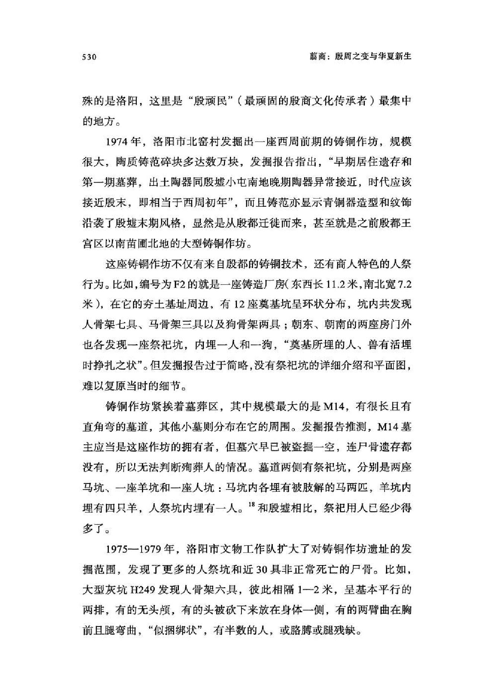
原书阅读器页 545原书物理 PDF 页 543印刷页 531
相比商朝，西周初年殷商遗民的这类行为已经急剧下降，甚至近于消亡，这应该和周公叔侄的严厉态度有直接关系。
针对殷人的分封：卫与宋
在周公辅政最后一年，新洛邑建设开工之际，周公旦以王的身份宣布了册封弟弟周封为卫侯的决定。
新生的卫国将统治旧商朝核心区，都城设在废殷都以南约60公里的朝歌。虽然殷都已经沦为废墟，居民也搬迁到关中、洛邑和宋国，但都城之外的商人聚落还有很多。对卫侯周封来说，统治和改造这些殷商旧民依然是一项颇有难度的工作。
周公格外地重视卫国的创建，在册封典礼上前后三次对周封训话，后都被收入《尚书》，分别是《康诰》《酒诰》和《梓材》。
这三篇诰命的文辞有些古奥，但基本精神比较明确，即要求周封管理好殷商旧民，还要让他们改变陋习，成为新民，为王朝继续赢得天命：“惟助王宅天命，作新民。”
在统治方式上，周公要求周封吸收以往商王的成功经验（“往敷求于殷先哲王”），多向商人长老咨询意见；但是在刑罚上，则要求周封必须垄断刑罚的权力，其他任何人都不能擅自做主，不管是判处死刑还是割鼻子或耳朵这类肉刑。
非汝封刑人杀人，无或刑人杀人；非汝封又曰劓刵（èr）人，无或劓刵人。（《尚书•康诰》）
前文已述及，周公和周族上层比较忌讳提及商人的人祭和人奠基等宗教行为，把它们笼统地归入了非法的刑罚。周公对周封的这一要求应当也包含要在卫国境内禁止人祭行为一一这已经是划归国君独有的权力，其他任何人的此类行为都是非法的。
在卫国境内，不仅禁绝人祭宗教的工作量比较大，针对殷商旧人谋逆行为的镇压力度也很大，所以周公的训话涉及刑罚的内容很多：要求周封制定刑罚的标准，通过相关的官员发布给民众，殷商刑罚中有合理性的要保留下来（“汝陈时臬司师，兹殷罚有伦”），有犯罪处刑的要按颁布的标准执行，不要再自己另出新意；但如果有自恃武力抢劫财物和人口以及因抢劫而杀人的，既然他们不怕死，就要一^概处死。
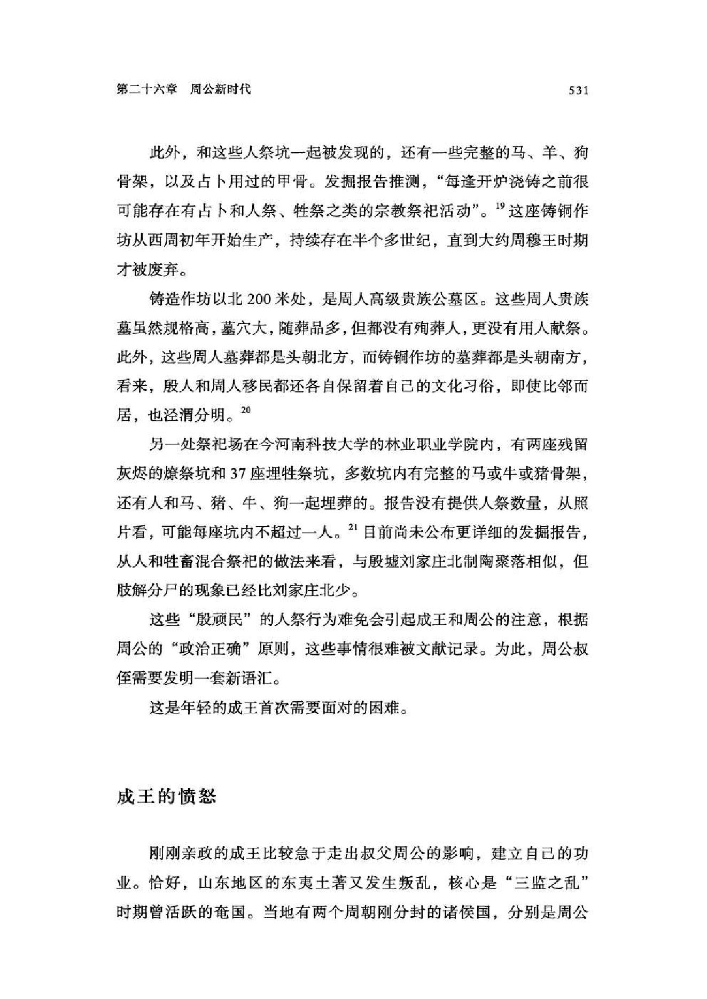
原书阅读器页 546原书物理 PDF 页 544印刷页 532
寇攘奸宄，杀越人于货，暋不畏死，罔弗憝。（《尚书•康诰》）
商人酗酒的风气很盛，不仅墓里随葬成套酒器，文献中也多次记载商人酗酒问题严重。不过，在重视政治正确的周公口中，商人只是到纣王时期才染上了这种恶习，之前都非常节制。他告诫周封：“在我们西土，文王曾经专门教导，只有祭祀的时候才可以喝酒，而且不能喝醉，所以直到今天，我们西土之人都没有酗酒的恶习。醉酒误事，让人丧失礼仪，荒废工作，还变得凶狠、残暴、不怕死；特别是很多人在一起喝酒，臭气会直达天庭，诸神很不喜欢，而这是商朝灭亡最主要的原因。”
接着，周公命令周封：“一定要严厉禁酒，如果跟随你去的周人聚在一起饮酒，你发现以后不要放过，把他们抓起来送到朝廷，我来处死。如果那些殷商贵族这样喝酒，你不用杀人，教育他们就行了。你如果不听我的教诲而把卫国搞乱，那也是要受死刑的！”
在册封典礼上，两名王朝官员依次履行给周封授予土地和民众的仪式，但授予卫国的疆界只列出了南北两个地标，北境的方位不详，南方到黄河南岸的荥阳一带。此外，还有两小块飞地，一块在宗周镐京附近，一块在成周洛阳附近，如果周封及后继者去参拜周王，可以住在自己的京郊领地之内。
授予周封的民众是“殷民七族”，分别是陶氏（陶工）、施氏（旗工）、繁氏（马缨工）、锜氏（锉刀工或釜工）、樊氏（篱笆工）、饥氏、终葵氏（椎工）”（《左传•定公四年》），部族名称大都和手工业有关，有制陶、冶金、车马器等，可能是卫国国君的私人产业。但卫国境内的商人总数应不止于此。
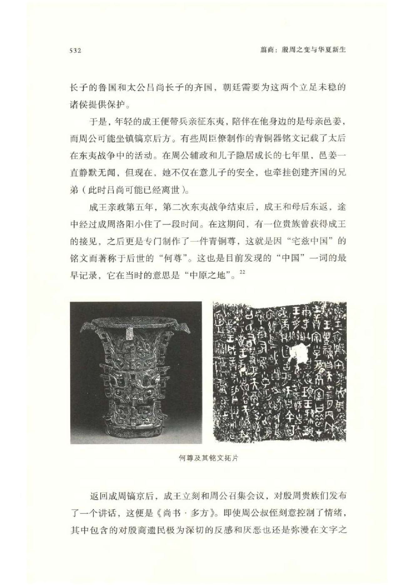
原书阅读器页 547原书物理 PDF 页 545印刷页 533
此外，虽然最后一位商王武庚禄父未得善终，形式上的商王朝也不复存在，但周公认为仍有必要保留商王室的世系，决定让纣王一位庶出的兄长微子启继承商朝，都城定在商丘，是为宋国。这里是成汤王灭夏之前的旧居，如今作为商朝传人之国也比较合适，因此商朝的王族后裔主要就聚居在宋国。
《史记・宋微子世家》载，牧野之战后，武王联军驻扎殷郊，微子启曾主动登门投降示好：“持其祭器造于军门，肉袒面缚，左牵羊，右把茅，膝行而前以告。”这是春秋时期亡国之君请求饶恕的仪式，商末应该还没有这种礼仪，可能出自后人的虚构。但微子主动向武王投诚应该是存在的，如前所述，稍后主动到关中投靠并定居的“微史氏”可能也是微子的家族成员，受微子之命主动到关中做人质。
当然，宋国国君不能再称王，地位比武庚时期也更低，但仍享有一些特殊的礼遇。比如，在西周朝廷的各种典礼上，宋国国君不需要和其他诸侯国君一样叩拜周王，时人称为“于周为客”[[fn:23]]，意为做周朝的客人。这是周王室对商王室后裔的优待。
周公大分封与新华夏
周公需要巩固新征服的东方地区，不仅要实现政治上的控制，还要实行文化上的改造，铲除商人血祭宗教的遗留，使其彻底同化于周人的文明。为此，需要把周人派遣到东方，建立一系列诸侯国。
用分封侯国的手段控制遥远地区并不是周人的发明，在商代就已经有一些深入异族之土的侯国，比如周族人最熟悉的老牛坡的崇侯之国。这是蛮荒上古时代的技术条件决定的：人口很少，交通通信不发达，很难用官僚制的地方层级政府管理远方，只能采用武装殖民、世袭统治的方式，也就是封邦建国的所谓“封建制”。
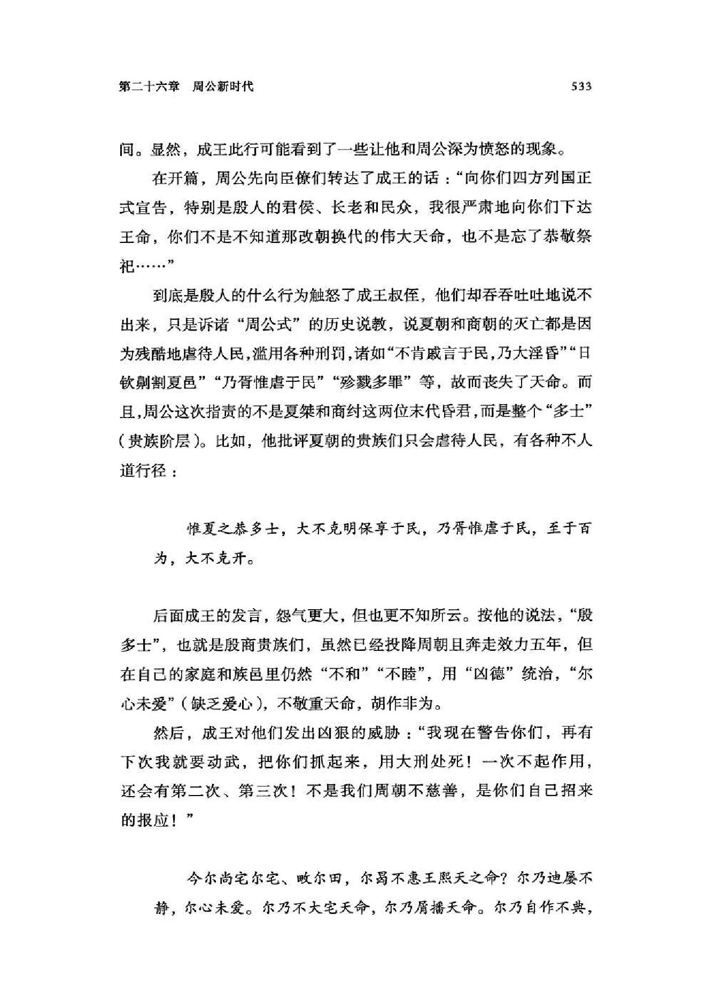
原书阅读器页 548原书物理 PDF 页 546印刷页 534
灭商后不久，周武王就已经分封了一些兄弟到东方建国，如负责监控殷都的“三监”管叔、蔡叔和霍叔，管叔的封国在今郑州市（管城区），蔡叔和霍叔的封国不详，但应该也距离殷商核心区不远。
《史记》还记载：“（武王）封尚父于营丘，曰齐。封弟周公旦于曲阜，曰鲁。封召公奭于燕。”但这似乎不太符合当时的局势，因为牧野灭殷之后，周人的势力还没有延伸到山东等东夷地区。不过，另一方面，武王完全有可能对重要的家属成员进行分封，这是部落社会“战利品分配”习俗的遗风，有其合理性。有学者注意到，鲁国和燕国最初的封地都在河南，鲁国在鲁山地区，燕国在郾城地区。看来，这是武王灭商之初能够控制的范围。[[fn:24]]
但武王在灭商后一年多就去世了，他规划的很多分封事业还没来得及实施，然后便是“三监之乱”和周公再度征服东方。因而，册封诸侯的活动在周公主政时期才真正大规模铺开。
这就是西周初年的“大分封”，周人称之为“封建”：“建”是建立国家；“封”字的来历有些曲折，它的本意是人工筑起土堆，但当时尚属草昧时代，诸侯国之间并没有明晰完整的疆界，只是在交通要道筑起一座大土堆代表国界，所以“封”就是给诸侯划定统治疆域。
《左传•僖公二十四年》载，春秋时候，一位名叫富辰的王室大臣劝谏周襄王说：
昔周公吊二叔之不咸，故封建亲戚，以蕃屏周。
这是“封建”一词最早的出处，封邦建国之意。武王册封过的管叔绝嗣，蔡叔和霍叔的后人被周公改封到了别处：蔡国在豫南，霍国在晋南。而之前被封到河南的鲁国和燕国，周公又重新规划了它们的位置。
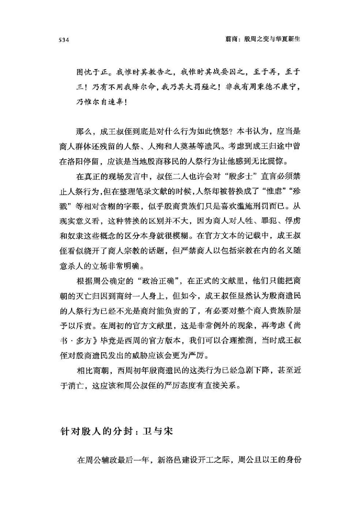
原书阅读器页 549原书物理 PDF 页 547印刷页 535
周公分封亲属的规模很大，春秋时人曾归纳说，文王的儿子辈（周公的兄弟们）建立的封国多达十六个：“管、蔡、郕、霍、鲁、卫、毛、聃、郜、雍、曹、滕、毕、原、酆、郇，文之昭也。”其中当然也包括周公自己的鲁国。但要注意，这里面的管国是武王而不是周公分封的，而且存在时间很短。之后，武王的儿子建立的封国有四个：“邗、晋、应、韩，武之穆也”；周公的儿子建立的封国有六个（鲁国之外）：“凡、蒋、邢、茅、胙、祭，周公之胤也。"（《左传•僖公二十四年》）
〔按语：李聃〕
但上述还不够全面，那些与王室同宗但亲缘关系稍远一些的封国没有被列入，比如召公奭的燕国，以及文王伯父仲雍后人的虞国、文王弟弟家族的虢国等。
除了这些周族的姬姓封国，和周人有传统盟友关系的姜姓族（羌人）也被分封到了东方，如山东有齐国和纪国，河南有吕国和许国。另一个和周族有联姻关系的西土部族姞姓戎人，也被分封到了河南地区，建立了姞姓的南燕国，只是在后来的史书中，它有时会被人混淆为召公的姬姓燕国。
至于东方原有的、对周朝比较恭顺的土著部族，周朝也会承认他们的诸侯身份，比如河南地区姒姓的陈国，据说是舜帝的后人，在周武王崛起的时候投靠了周——武王灭商的军队里的将领陈本可能就来自陈族。此外，武王还把自己的女儿嫁给了陈族的族长。
周公分封的姬姓诸侯国里，有些会掺杂一些被拆分的商族人：上述卫康叔获“殷民七族”；周公自己的鲁国则有“殷民六族”，其部族名称也和手工业有关；燕国都城的贵族墓地分为周人墓区和商人墓区，显然也有被拆分定居于此的商人。
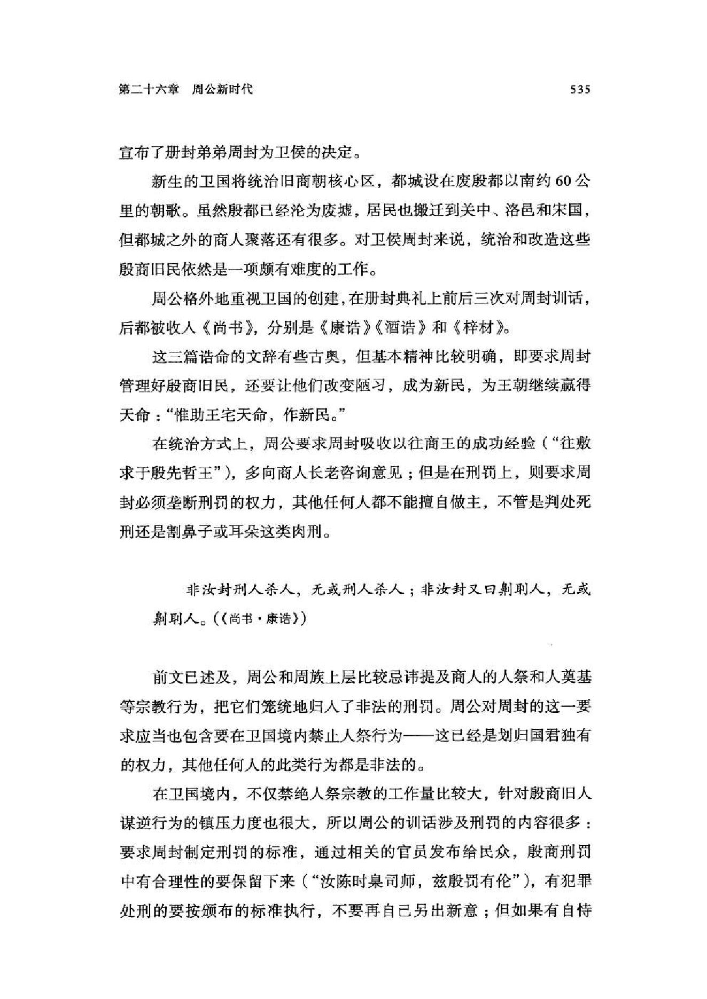
原书阅读器页 550原书物理 PDF 页 548印刷页 536
被分封的各姬姓和姜姓侯国皆设立在新征服的东方地区。因为这些诸侯国要统治原有的土著部落，所以周公特别强调要尊重他们的风俗和习惯法：分封周封到卫国，周公叮嘱“启以商政，疆以周索”（大原则用周人的，习俗用商人的）；分封武王的幼子周虞到晋国（封地在晋南的今翼城一带），在周人的传说中，这是夏朝的疆域，当时这里的主要居民是戎人——周公告诫周虞要“启以夏政，疆以戎索”（大原则用戎人的，习俗用夏朝的）。
周公辅政时期，最不安定的是山东地区，所以周公自己的鲁国和太公吕尚的齐国都在山东。这是他们为巩固王朝需要承担的责任。周公主要在朝廷工作，创立鲁国的工作是他的长子伯禽完成的；吕尚年事已高，可能分封不久就去世了，所以创立齐国的工作也主要由他的儿子完成。
此外，召公奭的燕国也很遥远，在今北京市境内。看来王朝重臣的封国都要设在最遥远的前方，这似乎是周公分封的一项原则。
当然，周公等贵族都有不只一个儿子，但幼子一般不会被分封到外地，而是在京畿获得一块封邑，继承父亲在朝廷的职位。从西周到春秋，周朝廷里一直有周公、召公、毕公担任大臣，他们大都是始祖的幼子家族。
从地理方位上看，周公辅政时期分封的这些姬姓和异姓诸侯，就像是伸向东方的探索触角和控制网络：
一，最近的是和关中毗邻的晋南运城盆地，有晋、韩、耿和霍。它们依托山地，面对平原，控制着山地的矿产资源、交通孔道和平原上的农业区；
二，在太行山南麓，东行折而向北，有原、邘、雍、凡、共、卫、邢和燕。它们一直连接到燕山山脉，镇守着之前殷商王朝的核心地带；
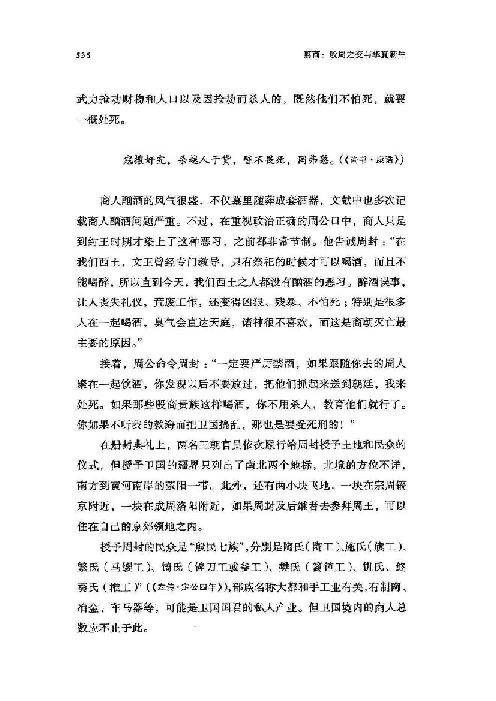
原书阅读器页 551原书物理 PDF 页 549印刷页 537
三，在黄河东南侧和洛阳以东，有东虢、郐、胙、杞、宋、戴、曹、郜、毛，并一直延伸到山东地区的齐、鲁、滕、郕和纪。这个方向还有些异姓的土著族邦，属于嬴、曹、任、风、妘等姓，但经历过西周初年的几次平叛战争后，已经没有实力对抗周朝，对齐、鲁等周诸侯也比较恭顺。
四，在河南腹地及淮河北侧的支流上，则有陈、蔡和蒋。它们控制了东南方的部分夷人地区，为周人继续向东南和西南扩张埋下了伏笔。
跨族婚姻与民族融合
伴随着周人大分封运动的，是广泛而持续的民族融合。由此，新的华夏族逐渐成形。
这和周人传统的“同姓不婚”（族外婚）习俗有直接关系。周人的“姓”是区别种族血缘的概念，它承认不同的族群血缘有区别，但又认为各族群是平等的，不仅可以，而且必须互相通婚。
那些被分封到远方的周族姬姓诸侯国的国君和高级贵族，都要从外国寻找异姓配偶，而低级贵族则多与本国内的异姓贵族通婚。各族群的贵族由此进入了一张巨大的联姻之网，异姓侯国的上层逐渐被周人同化，逐渐融入了周朝的政治同盟和文化共同体。他们追求的成功是获得周天子的册命，与姬姓诸侯嫁娶通婚，甚至在周王朝廷获得一个官职。由此，以今河南省为中心，环以陕、晋、冀、鲁部分地区，形成了一个跨地域的贵族阶级-周文化共同体。
商族人本来没有“姓”的概念，也不流行族外婚，但被周人征服后，商族人骄傲的自我意识被彻底打碎，与统治者周族通婚自然是他们求之不得的优待。周王室以及周公后裔的鲁国，都经常和商王后裔的宋国通婚。
周王室把商人定为“子”姓，这因循了商人的语言习惯，商王甲骨卜辞中的“子”原本就是王子之意。按照周人的习俗，商人的族姓是子，而族姓只能用来称呼女人，所以商族人的女性都称为“某子”，比如春秋时卫灵公的夫人以及和孔子有过暧昧传闻的南子都来自宋国。卫国是周王室的姬姓封国，这是周族人和商族人之间的联姻。
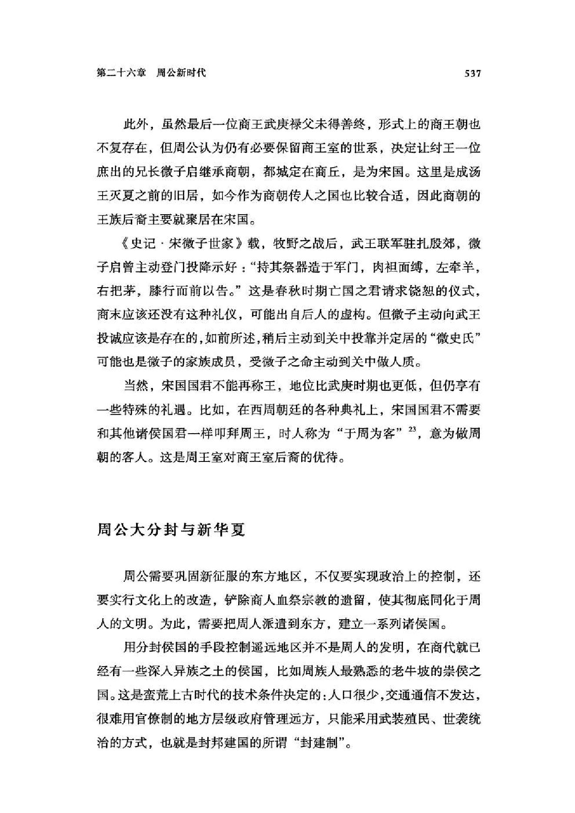
原书阅读器页 552原书物理 PDF 页 550印刷页 538
其他各种东方族群的“姓”，可能也是周人用近乎随机的方式命名的。随着西周统治日久以及与周人的通婚，这些族群上层也都接受了周人给自己的姓以及“同姓不婚”的观念，逐渐进入了周人文化圈。
新兴的周文化，是西土周族传统文化和商文化的融合：一，它继承了商人的文字体系，但部分语言习惯来自周族；二，它继承了商人的“上帝”观念，但又逐渐将其淡化为含义模糊的“天”；三，它严厉禁止商人的人祭宗教，拉远人和神界的距离，拒绝诸神直接干预人间事务；四，周人谨慎，谦恭，重集体，富于忧患意识，这些都成了新华夏族的样板品格。
进入“正常时代”的西周
西周王朝存续二百七十余年（公元前1046—前771），和殷都的寿命基本相同。
关于周人灭商和西周开国，还有一些文献资料，如《诗经》的史诗、《尚书》的诰命和《逸周书》的记事；但开国后的史书记载却非常稀薄，我们只知道，从武王到末代周幽王，西周一共有过十二位王，但就连他们的在位时间也大多难以确定。
在文王、武王和周公时期，周人还曾经模仿商王在占卜甲骨上刻字，但后来却逐渐地不再刻写卜辞。当然，他们还用甲骨来占卜，只是不再留下卜辞记录，这使我们缺失了很重要的信息来源。
周人显贵大都热衷铸造青铜礼器，有些铜器上会铸造铭文（金文），记载主人认为重要的事件，最常见的是受到周王的接见，或者获得王赏赐的贝、车服或者土地、官职，少数会记载主人的某次战功，或者与其他贵族的诉讼和土地交换。受铜器体量的限制，铭文的篇幅都不太大，叙事非常简略，因此后人对西周贵族社会的认识只能是蜻蜓点水。
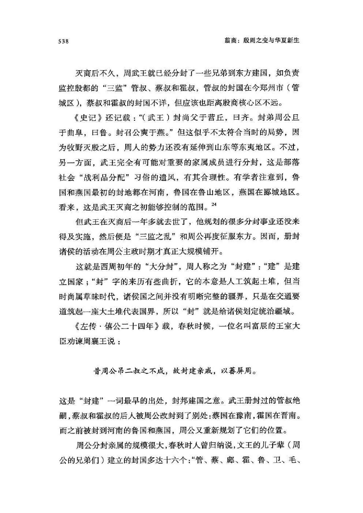
原书阅读器页 553原书物理 PDF 页 551印刷页 539
西周的主要成就是它的诸侯封国在东方发芽成长，北到燕山，南到淮河，东到山东，西到陇山，形成了以中原为中心的政治文化圈。
在周公时代，向远方分封如此众多的诸侯国是一项冒险之举，这就像是把种子撒向一片未经开垦的土地。在周王朝的荫庇之下，这些诸侯国基本都存活了下来，但其中哪些能发展壮大，则有很多未知因素。
王朝重臣（如太公吕尚、周公旦和召公奭）的嫡长子封国，会获得较多的臣民和领土，成为举足轻重的大国。齐国和鲁国在这方面的表现都不令人意外，但召公的燕国实在过于辽远，在西周朝的多数时间乃至整个春秋时代，它几乎都是默默无闻，有时甚至还被敌对的土著族群隔断道路而有上百年和中原音讯不通，它后来在战国时期能够重新振兴而跻身战国七雄，肯定不是当年所能预料的。
到春秋时期，很多周人诸侯国已经消失，大多被周边邻居甚至自己的兄弟之国吞并。最先靠兼并膨胀起来的是晋国，最初分封时，它还只是运城盆地中各姬姓诸侯中的一个，并没有受到格外优待，所以也没人会预料到它在四百年后的急剧扩张。
周公之后的西周王朝，分封新诸侯的工作仍在进行，但规模已经不如开国之初。理论上说，每一代周王都会有不只一个王子，除了继承王位的嫡长子，其他王子也都可能被分封为诸侯，但在承平时代，被分封到遥远的陌生土地并不是一件美差——关中地区最为富庶和安全，这里有掌控巨大资源的朝廷以及显贵辐辏的社交场，远胜边地侯的生活。
西周王朝曾至少三次向南方扩张，把势力推进到淮河南侧及汉江流域，所以又在淮河和汉江流域分封了一些姬姓诸侯国，或者把原有诸侯异地安置，如姜姓的申国，它原在关中，西周末期（宣王时期）被改封到了南阳地区，《诗经•大雅•崧高》记载了宣王此次册封（迁徙）申国的盛况。
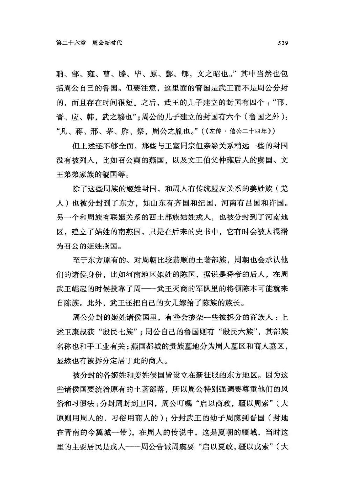
原书阅读器页 554原书物理 PDF 页 552印刷页 540
随着周人占据东方日久，其在西部的亲缘部族，也就是姜姓和姬姓的戎人，也逐渐向东迁徙，在东方诸侯列国间定居下来。他们还保留着自己的部落组织，虽也有定居农业，但还是畜牧业占比较大。然而，日渐“文明”和富裕的周人此时已经不太看得起这些粗朴的戎人，或许是因为古老的亲缘关系，周人东方诸侯大都对其采取一定的容忍，双方一般能相安无事。
可以这么说，西周一春秋时的中原，开发程度还很低，各诸侯国的城邑就像散布在荒野中的零星孤岛，有各种土著或东来戎人部族穿插点缀其间。
在长江以南，考古曾发现一些周商元素混合的西周时期聚落，看来周人和殷商遗民还曾经结成远征小团体深入江南建立据点。但由于迄今在史书和金文里未见有过记载，很难判断这些人的目的是什么。而且，他们并未对南方造成太大影响，很快就消失了，或者被周边土著同化了。
对西周王朝的威胁主要来自陕北和晋北，铜器铭文记载，“戎”人部落时常侵袭关中核心区。战斗中，周军会缴获大量马和马车，但我们不清楚这些马车是否双轮快速马车，如果是，则代表戎人已有发达的手工业，身处拥有复杂分工的农业文明；如果还只是低速的货运大车，则代表他们此时还处于萌生中的游牧文明阶段。另外，周人的文献也没有提及这些戎人是否属姜姓或姬姓，所以难以判断他们和周人是否有亲缘关系。
西周社会是典型的身份世袭制，周王任命朝廷高级官员（卿）的选择范围很小，基本由十几个显赫的家族世代占据着朝廷主要官职。而且，官职本身并没有薪俸，全靠自家封邑收入，做官只是可以给他们提供获得更多封邑的机会。各诸侯国内部的权力结构也类似，但规模要比镐京朝廷小很多倍。
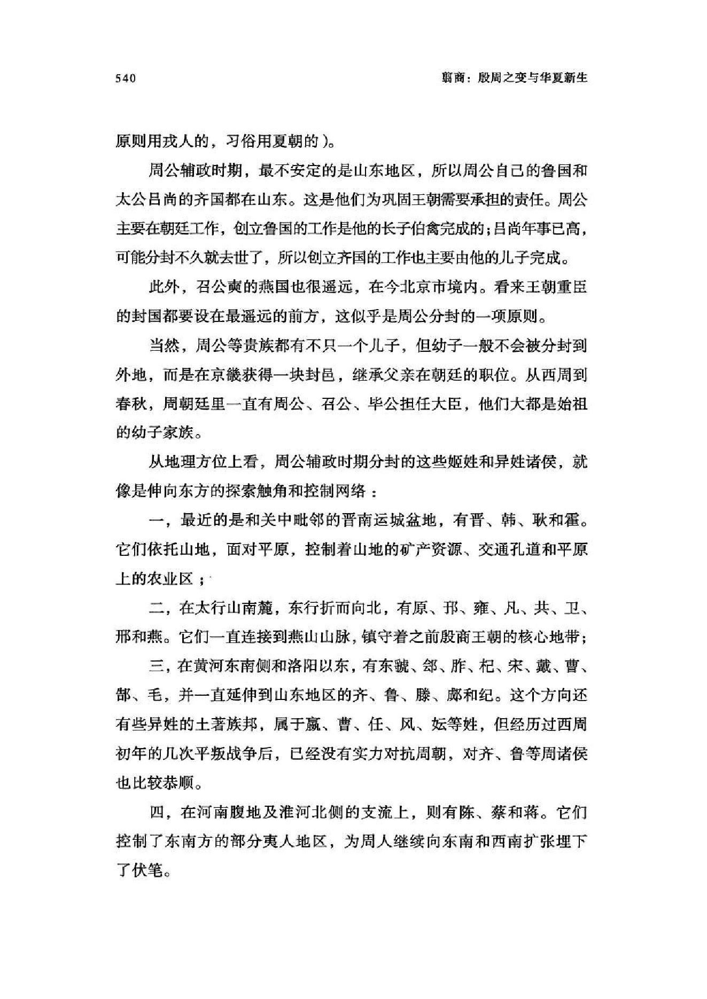
原书阅读器页 555原书物理 PDF 页 553印刷页 541
就这样，随着统治阶层的繁衍，周朝特色的贵族制度逐渐得以形成，其中，最首要的是“宗法”家族制，核心则是嫡长子一系的独尊地位。
一，周朝各姬姓诸侯（被分封的王室亲属）对周王的效忠服从，是家族兄弟（及其后人）对嫡长兄（及其嫡系后人）的服从。
二，在各诸侯国内部，太子之外的公子被分封为世袭大夫，大夫再繁衍和分封出“士”。
三，非周族的异姓诸侯和贵族则通过婚姻关系被纳入家族结构中。周王尊称同姓诸侯国君为“伯父”，称异姓诸侯国君为“伯舅”（当然必须是曾经和周王室有过联姻关系的），伯代表排序。
这套基于血缘宗法制的贵族等级和封建政治秩序，周人称之为“礼工不同等级的贵族使用相应的车马、住宅、衣服、乐器、玉器、酒器和食器组合，丧礼和随葬品也以此类推。各种典礼仪式上，比如朝见天子、祭祀和宴会等，入场顺序以及站或坐的位置由相应的等级身份决定。
典礼可以在不同层次举行，如诸侯国或大夫家，但基本原则一致。贵族的冠礼、婚礼、丧礼和祭礼也都有各等级的标准规范，几乎所有礼仪场合都有乐队伴奏，而乐队的规模和演奏的乐曲也都有相应规范。所以，周人贵族文化又被称为“礼乐文明”。
后世周人认为，这套礼乐文明是由周公创立的，到孔子的儒家学派出现后，“周公制礼作乐”的观念则更加流行。其实，周公当政时最关注的是新兴周王朝的各种军政大事，如废除血祭、拆分商人和大分封等，还来不及注意过于细节的层面，所以礼乐制度实则是在西周朝逐渐积累和规范起来的，到春秋乃至孔子的时代都还在继续发展。
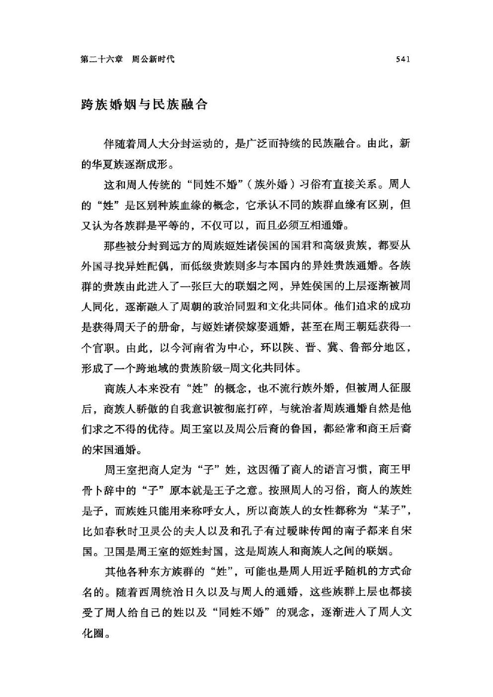
原书阅读器页 556原书物理 PDF 页 554印刷页 542
到西周后期的厉王、宣王和幽王时期，有些高级贵族家族已经在朝廷中非常活跃。他们在关中拥有封邑，连续数代人担任周朝高官，和外地诸侯通婚，形成了一张包含各族姓、从京师到各诸侯国的权力之网。
到周幽王时期，贵族诸侯间的派系之争则更为激化。周幽王试图疏远那些长期得势的姬姓和姜姓诸侯，利用另外一些诸侯国的力量废黜了来自姜姓申国的王后以及王后生的太子宜臼，引发了周朝的激烈内战。随后，北方犬戎部落受邀介入，结果关中和镐京在混战中沦为废墟，幽王被杀。在晋和郑等诸侯国的支持下，平王宜臼迁都洛阳，幽王倚重的诸侯则被逐一消灭。
从此，中国历史进入东周-春秋时期，王室权威衰落，中原诸侯开始摸索新的游戏规则。
注释
1《尚书》的“周初八诰”是《大诰》《康诰》《酒诰》《梓材》《召诰》《洛诰》《多士》《多方》。其中《多方》晚一些，已经在周公奉还大政后成王亲政的第五年。
2如《尚书大传》中举出的“奄君、蒲姑”，是山东部族；《逸周书•作雒解》记载有“殷东徐、奄及熊盈”；《尚书•大诰序》和《史记•周本纪》有“淮夷”。
3释文参考杨宽《西周史》，第149页。
4蔡叔、霍叔的继承人后来都获得了封国，管叔则没有后裔传承。
5《吕氏春秋•古乐》：“成王立，殷民反，王命周公践伐之。商人服象，为虐于东夷。周公遂以师逐之，至于江南。乃为三象，以嘉其德。”
6《孟子•滕文公章句下》：“周公相武王，诛纣伐奄，三年讨其君，驱飞廉於海隅而戮之，灭国者五十，驱虎豹犀象而远之，天下大悦。”这里说的“相武王”是错的，当时已经是成王继位，周公摄政称王。《逸周书•作雒解》：“凡所征熊盈族十有七国，俘维九邑。俘殷献民，迁于九毕”。九毕方位不详，应在周人控制严密的西土。这也是秦人先祖嬴姓东夷被迁徙到西部的由来，只是司马迁写《史记•秦本纪》时已经不了解这段来历，以为秦族一直生息在西土。
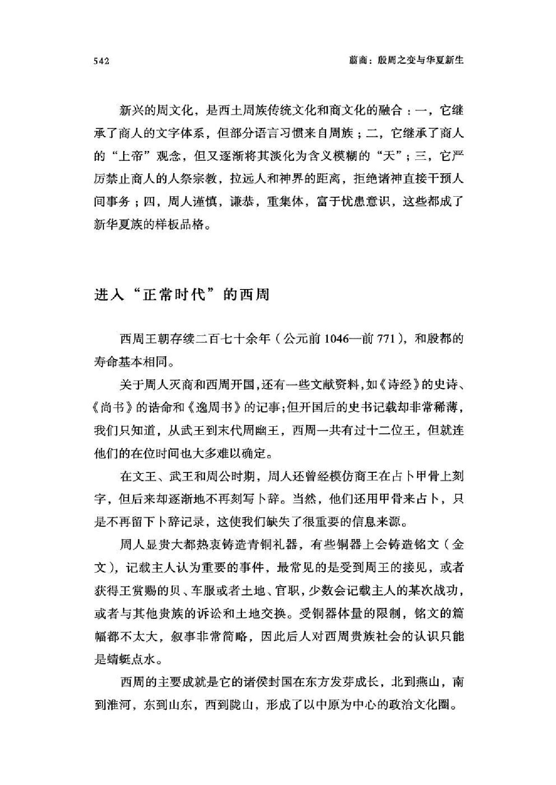
原书阅读器页 557原书物理 PDF 页 555印刷页 543
7如前文所述，武丁的这个真实形象没能流传到周以后的时代，只保留在了甲骨文里。
8梁思永、高去寻：《侯家庄T001号大墓》，（台北）“中研院”历史语言研究所，1962年。
9中国社科院考古所安阳工作队：《河南安阳市殷墟刘家庄北地2008年发掘简报》，《考古》2009年第7期。
10同上。
11中国社科院考古所安阳工作队：《河南安阳市殷墟刘家庄北地2010-2011年发掘简报》。
12中国社科院考古所安阳工作队：《河南安阳市殷墟刘家庄北地铅锭贮藏坑发掘简报》，《考古》2018年第10期。有关H25窖藏坑的基本信息及图片皆出自该简报。
13何毓灵：《论殷墟刘家庄北地铅锭贮藏坑性质》，载中国社科院考古所夏商周考古研究室主编《三代考古》（第八辑），科学出版社，2019年。
14《尚书•君奭》：“周公……又曰：‘天不可信，我道惟宁王德延，天不庸释于文王受命。此语大意是，天命有去留，只要我们能信守文王的德行，上天降给文王的大命就能一直保持下来。
15王晖：《周初改制考》，《中国史研究》2000年第2期。
16《尚书•洛诰》：“戊辰，王在新邑烝，祭岁，文王骍牛一，武王骍牛一。”
17以往较少有学者注意到人祭记忆被人为抹杀的问题，只有童恩正有过一点猜测：“在文献中有关殷代人祭的记载，由于奴隶社会和封建社会史家的有意隐晦，我们所见的已经不多，但古籍中偶然亦保存了一些痕迹……”参见童恩正《谈甲骨文“羌”字并略论殷代的人祭制度》，《四川大学学报》（哲学社会科学版）1980年第3期。
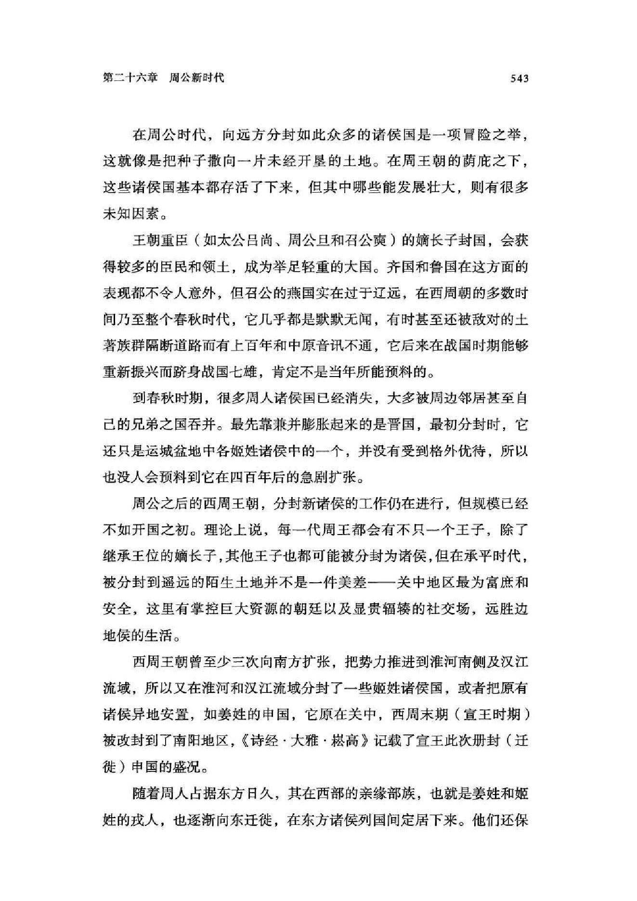
原书阅读器页 558原书物理 PDF 页 556印刷页 544
18洛阳博物馆：《洛阳北窑村西周遗址1974年度发掘简报》，《文物》1981年第7期。
19洛阳市文物工作队：《1975—1979年洛阳北窑西周铸铜遗址的发掘》，《考古》1983年第5期。
20洛阳市文物工作队：《洛阳北窑西周墓》，文物出版社，2002年。殷墟时期的商人墓葬，其实没有固定的朝向，不同的遗址各有其规律。而北窑商周两族墓葬头向的不同，似乎是两者有意互相立异。
21周立、石艳艳：《洛阳西周早期大规模祭祀遗存的发掘》，《中国文物报》2016年6月17日。
22何尊铭文的制作时间是“五祀”，有学者认为这是周公辅政第五年、洛阳刚刚建成的时间。其实周公营洛邑是在辅政第七年，对此《尚书》有明确记载。成王亲政后开始重新纪年，何尊和《多方》的五祀都是成王亲政的年份。
23《诗经•周颂•有客》：“有客有客，亦白其马。”《左传•僖公二十四年》：“皇武子曰：‘宋先代之后也，于周为客。
24许倬云：《西周史》，第150页。
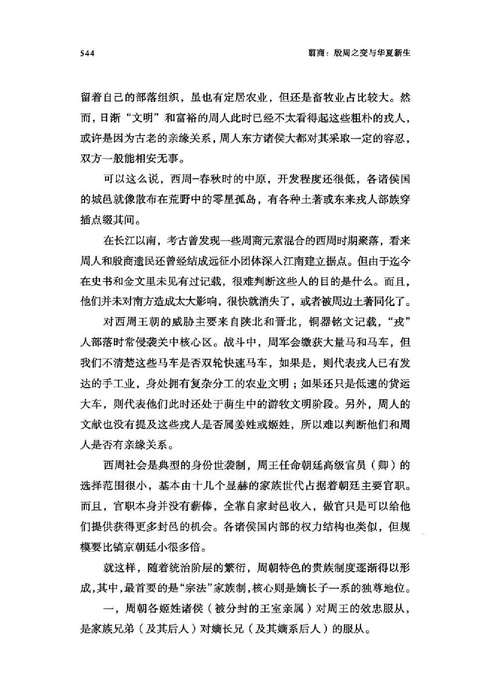
原书阅读器页 559原书物理 PDF 页 557印刷页 545
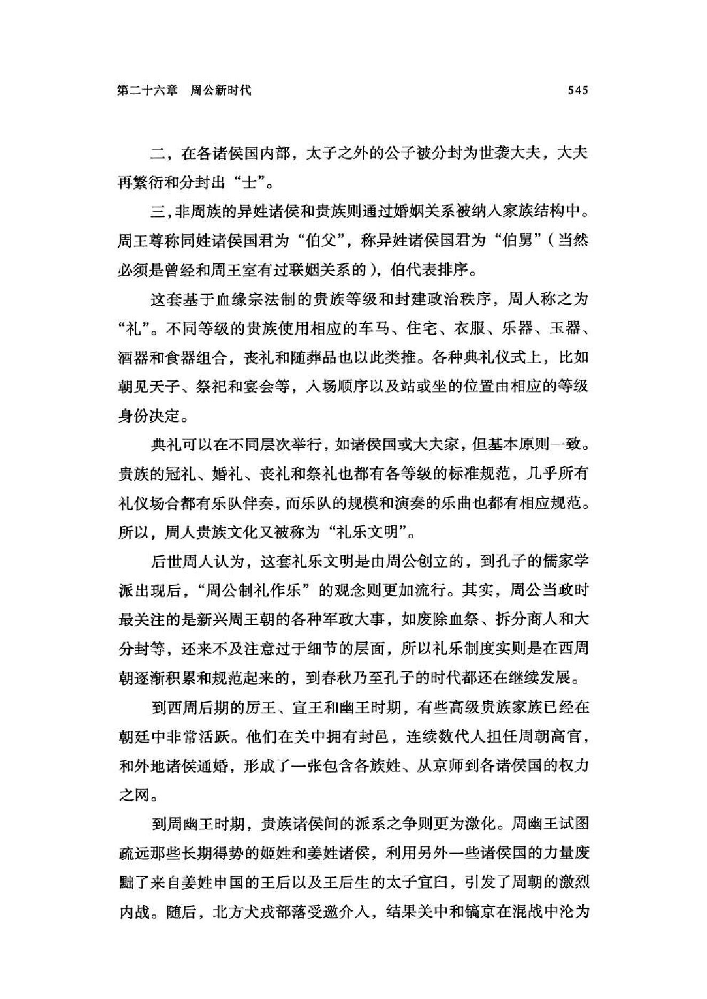
原书阅读器页 560原书物理 PDF 页 558印刷页 546
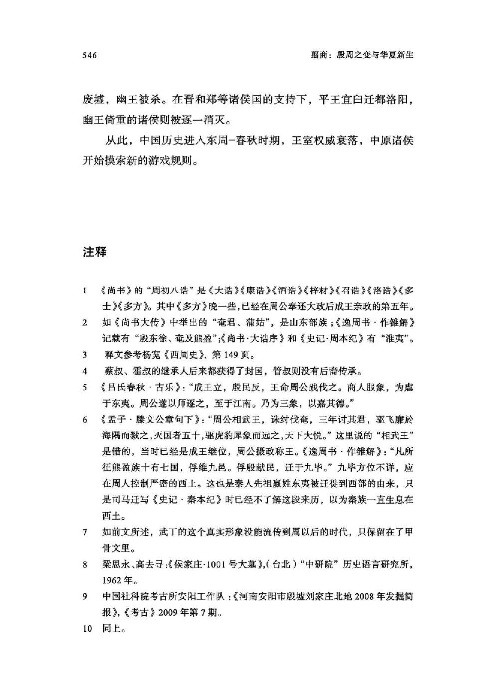
原书阅读器页 561原书物理 PDF 页 559印刷页 547
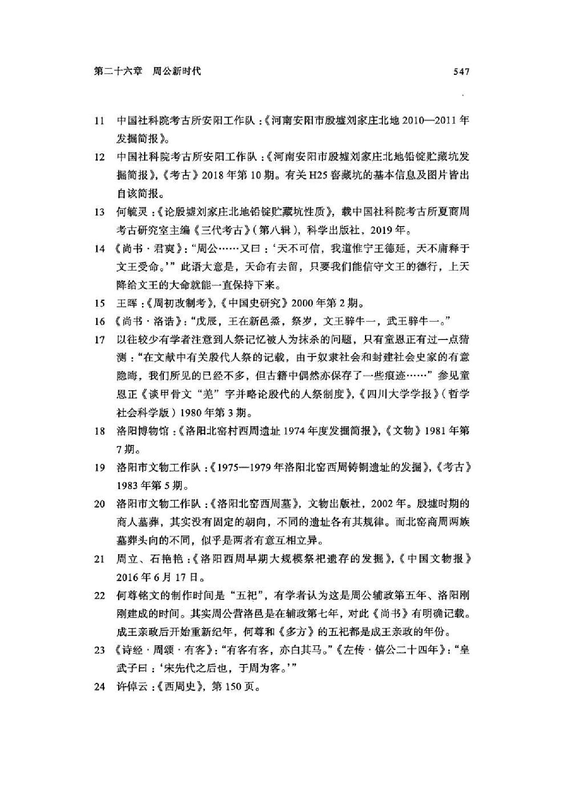
原书阅读器页 562原书物理 PDF 页 560印刷页 548
编辑札记
标记
先在正文中选择文字，再输入拼音；可用“拼音；简注”。